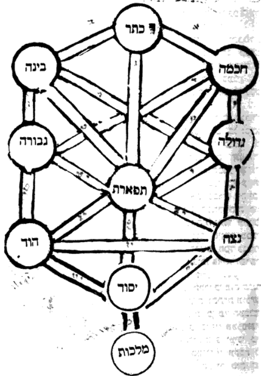
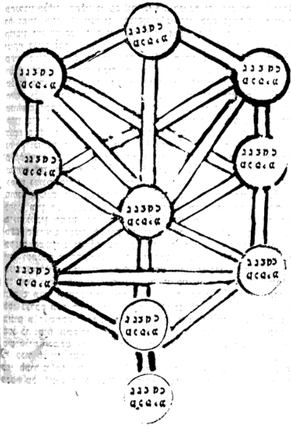

Pardes Rimmonim, English translation with the Hebrew.
We named it "Channels" because in it is explained the matter of the channels that extend from one sefirah to another — how many they are, what they are, and what they serve. Its chapters number five.
7:1:1 The Seventh Gate: The Gate of Channels:
שער השביעי הוא שער הצנורות:
7:1:2 The intent in this Gate is to explain the matter of the channels, concerning which the commentators have agreed that they are between each and every Sefirah, [and] by means of which the Sefirot draw their effluence one from another. And so we shall explain what their matter is, and the intent in them, and their figure, and their number.
הכוונה בשער הזה לבאר ענין הצנורות שהסכימו בהם המפרשים שהן בין כל ספירה וספירה שעל ידם שואבות הספירות שפעם זו מזו. וכן נבאר מה עניינם והכונה בהם וצורתם ומספרם:
7:1:3 Chapter One:
פרק ראשון:
7:1:4 Before anything [else], we say that the term "channel" [tzinor] is derived from the language of "Deep calls unto deep at the sound of Your channels [tzinorekha]" (Psalms 42:8). And the meaning of tzinor is a pipe made [as] a way by which water comes from place to place. And the Kabbalists applied this [term] to the way of the effluence that is poured from attribute to attribute. And many times the Kabbalists designated the stopping of the effluence by the expression "the breaking of the channels," and likewise "the ruin of the channels," and the like; and these things are not as their plain sense. And the matter is that every Sefirah that receives from its fellow, at the time when it wishes to receive, certainly an arousal must ascend from it to the upper one, so that by means of its arousal the upper one will be aroused and pour effluence into it; and so Rashbi, peace be upon him, explained in many places. And the proof of the matter is from the verse (Genesis 2:6) "And a mist went up from the earth," and afterward "and watered," etc. And we have set this matter apart, to explain it with sufficient explanation in the Gate of Essence and Governance, with God's help. And since the matter is so, therefore when a Sefirah wishes to receive from the Sefirah above it, the lower attribute must shine toward it a shining face, so that by the light of its face, gazing upon the light of the [upper] Sefirah, it will arouse it, and abundant effluence will be poured into it, and its face will shine from the light of the upper Sefirah. And not from all the faces together is it aroused to receive, but particular faces opposite particular faces, according to the will of their Emanator. And as the faces opposite the faces multiply, the channels multiply, as we shall explain in the coming chapters. And the general rule is that the light that is aroused from this one to that one and from that one to this one, by means of which the effluence is poured forth, is called a channel. And the parable for this is the sight of the eye, of which most of the natural philosophers said that a subtle light goes out from the eye and strikes the thing seen, and draws in that light, and from within it apprehends the thing seen. It turns out, according to their view, that the light that is aroused from the eye to draw in the sight would be called a channel, by way of parable: for just as the channel is a passage for the water, and by means of it the water is drawn to the desired place, so the light that goes out from the eye is a channel for the sight, to draw by means of it the thing seen into the eye. And so is the matter in the Sefirot: the light that goes out from the lower one to the upper one, and from the upper one to the lower one, is designated by the name "channel," because by means of it the effluence is drawn from the upper Sefirah to the lower Sefirah. And just as, when a person hides his eyes from seeing, that channel is stopped and the eye does not draw in the sight—and this matter would be designated the breaking of the channel and its stopping—so in the matter of the Sefirot: when, through the multitude of sins, the faces turn aside, and that light is not aroused, and the Sefirah does not draw the effluence from its fellow, this is designated by the name "the breaking of the channels and their stopping." And now, with this matter, how much sweeter than honey is the parable of the stories that we set forth in the Gate of Self and Vessels, chapter four.
קודם כל דבר נאמר כי לשון צנור נגזר מלשון תהום אל תהום קורא לקול צנוריך (תהלים מב ח). ופירוש צנור הוא סילון העשוי דרך בו יבוא המים ממקום למקום. והמקובלים כינו ענין זה אל דרך השפע הנשפע ממדה למדה. והרבה פעמים כינו המקובלים אל השבתת השפע לשון שבירת הצנורות וכן קלקול הצנורות וכיוצא בזה, ואין הדברים האלה כפשטן. והענין הוא כי כל ספירה המקבלת מחברתה בעת רצונה לקבל בודאי צריך שיעלה התעוררות ממנה אל העליונה כדי שע"י התעוררותה תתעורר העליונה ותשפיע בה וכן פי' הרשב"י ע"ה במקומות רבים. וראיית הענין מפסוק (בראשית ב ו) ואד יעלה מן הארץ ואח"כ והשקה וכו'. ויחדנו הענין הזה לבארו באור מספיק בשער מהות וההנהגה בס"ד. ואחר היות הענין כך לכן כאשר תרצה הספירה לקבל מספירה של מעלה ממנה תצטרך המדה התחתונה להאיר כנגדה פנים מאירים כדי שבאור פניה המביטים באור הספירה יעורר אותה ויושפע בה שפע רב ויאירו פניה מאור הספירה העליונה ולא מכל הפנים יחד תתעורר לקבל אלא פנים מיוחדים כנגד פנים מיוחדים לפי רצון מאצילם. וכאשר יתרבו הפנים נגד הפנים יתרבו הצנורות כאשר נבאר בפרקים הבאים. והכלל כי האור המתעורר מזו לזו ומזו לזו שעל ידה יושפע השפע נקרא צנור. והמשל בזה אל ראות העין שאמרו רוב הטבעיים כי אור דק יוצא מהעין ומכה בדבר הנראה ושואב האור ההוא ומתוכו משיג הדבר הנראה. נמצא לפי דעתם כי האור המתעורר מן העין לשאוב הראות יקרא צנור. ע"ד המשל כי כמו שהצנור הוא מעבר אל המים ועל ידה נשאבים המים אל מקום הנרצה כן האור היוצא מן העין הוא צנור אל הראות לשאוב על ידו הדבר הנראה בעין. וכן הענין בספירות האור היוצא מהתחתונה אל העליונה ומהעליונה אל התחתונה יכונה בשם צנור, מפני שעל ידה נשאב השפע מן הספירה העליונה אל הספירה התחתונה. וכמו שכאשר יעלים האדם עיניו מהראות יושבת הצנור ההוא ולא ישאב העין הראות ויכונה הענין הזה שבירת הצינור והשבתתו, כן בענין הספירות כאשר ברוב העונות תסובנה הפנים ולא יתעורר האור ההוא ולא ישאב הספירה השפע מחברתה זה יכונה בשם שבירת הצינורות והשבתתם. ועתה עם הענין הזה מה מתוק מדבש משל העליות שהמשלנו בשער העצמות וכלים פ"ד.
7:1:5 And behold, this matter is explained in the Zohar in many places, and in particular in Parashat Vayikra (fol. 15), and these are its words: "For it is taught: at the time when the Holy One, blessed be He, looks upon the world and sees that the deeds of human beings below are worthy, the Holy Ancient One is revealed in Zeir Anpin, and all those holy crowns gaze face to face, concealed, and all of them are blessed. Why are they blessed? Because they gaze one upon another in a straight way, not turning aside to the right or to the left. This is what is written: 'their faces behold [one another] straight.' And all of them are blessed and water one another, until all the worlds are blessed and all the worlds are found as one; and then it is called 'YHVH is one and His name is one.' And when the sins of the world multiply, the Holy Ancient One is concealed, and they do not look face to face. And then judgments are aroused in the world, and thrones are cast down, and the Ancient of Days is concealed and is not revealed. This is what is written: 'I beheld until thrones were cast down, and the Ancient of Days sat,' etc.—for those supernal crowns that water all the others do not stand in their subsistence (in our Zohar the reading is le-okmei be-kiyyumaihu, 'to sustain [them] in their subsistence') (lo, 'not'). And who are they? The Patriarchs. 'And the Ancient of Days sat'—and was not revealed. And then the wicked of the world overturn mercy into judgment." Thus far [its] words.
והנה הענין הזה פי' בזוהר במקומות רבים ובפרט בפ' ויקרא (דף ט"ו) וז"ל דתאנא, בשעתא דקב"ה אשגח בעלמא וחמא דמתכשרין עובדיהון דבני נשא לתתא, אתגליא עתיקא קדישא בזעיר אפין ומסתכלין כל אינון כתרין קדישין אנפין באנפין סתימין ומתברכין כלהו. מ"ט מתברכין משום דמסתכלין אילין באילין בארח מישור. דלא סטו לימינא ולשמאלא. הה"ד ישר יחזו פנימו. ומתברכין כלהו ומשקיין דא לדא עד דאתברכן כולהו עלמין ואשתכחו עלמין כלהו כחד, וכדין אתקרי ה' אחד ושמו אחד. וכד חובי עלמא סגיאו, אסתים עתיקא קדישא ולא משגיחין אפין באפין. וכדין דינין מתערין בעלמא וכרסוון רמיו ועתיק יומין אסתים ולא אתגלייא. הה"ד חזה הוית עד די כרסוון רמיו ועתיק יומין יתיב כו'. דאינון כתרין עלאין דאשקיין לכלהו אחרנין לא קיימי בקיומייהו (בזהר שלנו איתא לאוקמי בקיומייהו) (לא). ומאן אינון אבהן. ועתיק יומין יתיב ולא אתגלייא. וכדין מהפכי חייבי עלמא רחמי לדינא עכ"ל.
7:1:6 From within it the matter of the channels and their rectification is explicitly explained: that it is at the time when the Emanator wills to pour forth [effluence]; and then the Holy Ancient One—which is Keter, Arikh Anpin—pours light and effluence to all the Sefirot, and the faces, which are the matter of the Sefirot, are set straight opposite them, and the effluence multiplies. However, when the faces turn aside to the right and to the left through the sin of the generation, then the channels are ruined and no effluence is poured forth. And there are many [passages] like this passage in the Zohar that reveal this matter, and there is no need to go on at length, for they are recognizable as words of truth. And now that the essence of the channel and what is meant by it have been explained, we shall further explain the number of the channels upon which the commentators have agreed. And the number of the channels: three are drawn from Keter—one to Chokhmah, and one to Binah, and one to Tiferet. A further three (a variant reads: four) are drawn from Chokhmah—one to Binah, and one to Chesed (a variant reads: and one to Gevurah), and one to Tiferet. A further two (a variant reads: three) are drawn from Binah—(a variant reads: one to Chesed), one to Gevurah, and one to Tiferet. A further three from Gedulah—one to Gevurah, one to Tiferet, one to Netzach. A further two are drawn from Gevurah—one to Tiferet, and one to Hod. A further three are drawn from Tiferet—one to Netzach, and one to Hod, and one to Yesod. A further two are drawn from Netzach—one to Hod, and one to Yesod; and, in the view of some, one to Malkhut. A further one channel is drawn from Hod to Yesod; and, in the view of some, one to Malkhut. A further one is drawn from Yesod to Malkhut. Their total is found [to be] twenty-two, as the number of "By you [bekha = 22] shall Israel bless, saying" (Genesis 48:20). And it is our wish to depict their figure here, so that understanding them will be easy in the eyes of the discerning; and this is their figure:
מתוכו מתבאר בפירוש ענין הצנורות ותיקונם שהוא בעת רצון המאציל להשפיע ואז עתיקא קדישא שהוא הכתר אריך אנפין משפיע אור ושפע לכל הספירות והפנים שהם ענין הספירות יישירו נגדם והשפע מתרבה. אמנם כאשר תסובב הפנים אל הימין ואל השמאל בעון הדור, אז הצינורות מתקלקלים ואין שפע נשפע. ויש כיוצא במאמר זה הרבה בזוהר המגלים הענין הזה ואין צורך להאריך כי ניכרים הם דברי אמת. ואחר שנתבאר מהות הצנור והנרצה בו. נבאר עוד מנין הצינורות אשר הסכימו בהם המפרשים. ומנין הצינורות הם ג' נמשכים מהכתר, אחד אל החכמה, ואחד אל הבינה, ואחד אל הת"ת. עוד ג' (נ"א ד') נמשכים מהחכמה, אחד אל הבינה, וא' אל החסד (נ"א וא' אל הגבורה), וא' אל הת"ת. עוד ב' (נ"א ג') נמשכין מהבינה, (נ"א א' אל החסד), א' אל הגבורה, וא' אל הת"ת. עוד ג' מהגדולה, א' אל הגבורה, א' אל הת"ת, א' אל הנצח. עוד שנים נמשכים מהגבורה, א' אל התפארת, ואחד אל ההוד. עוד שלשה נמשכים מן הת"ת, א' אל הנצח, וא' אל ההוד, וא' אל היסוד. עוד שנים נמשכים מהנצח, א' אל ההוד, וא' אל היסוד ולדעת קצת א' אל המלכות. עוד צנור א' נמשך מהוד אל היסוד ולדעת קצת א' אל המלכות. עוד א' נמשך מהיסוד אל המלכות. נמצאו כללם כ"ב כמספר ב"ך יברך ישראל לאמר (בראשית מח כ). ורצוננו לצייר צורתם הנה. כדי שיקל הבנתם בעיני המשכיל וזהו צורתם:
7:1:7 (Says the editor: We have depicted this figure, the one agreed upon according to the view of the author—namely, four from Chokhmah and three from Binah—for so he depicted and explained in his Sefer Or Ne'erav, part six, chapter two. But in this composition he wrote the view of the commentators, and omitted two channels—one from Chokhmah to Gevurah and one from Binah to Gedulah—and added two channels, one from Netzach to Malkhut and one from Hod to Malkhut. And it is not agreed upon, as he explained in chapter three and proved from the Zohar, Parashat Noach):
(אמר המגיה ציירנו הצורה הזאת המוסכמת לדעת המחבר דהיינו ד' מחכמה וג' מבינה כי כך צייר וביאר בספר אור נערב שלו בחלק ו' בפרק ב'. אבל בחבור הזה כתב דעת המפרשים וחסר ב' צינורות א' מחכמה אל הגבורה וא' מבינה אל גדולה והוסיף ב' צינורות א' מנצח אל המלכות וא' מהוד אל המלכות. ואינה מוסכמת כמו שביאר בפ"ג והכריח מהזהר פ' נח):
7:1:8

7:2:1 Since in the preceding chapter we have planted the Tree of Life for the knowledge of good, and [shown] how the deeps [call]—"deep calls unto deep at the sound of the channels"—it is fitting for the inquirer to take care in working it and in keeping it, so that we shall not need to depict it again in the coming chapters, God willing. And now we shall explain what these callings serve.
אחר שבפרק הקודם נטענו את עץ החיים לדעת טוב וכיצד התהומות תהום אל תהום קורא לקול הצנורות ראוי למעיין ליזהר בעבודתו ובשמירתו כדי שלא נצטרך עוד אל ציורו בפרקים הבאים ב"ה. ועתה נבאר מה הקריאות האלה משמשות.
7:2:2 And behold, from Keter three channels go out:
והנה מהכתר יוצאים ג' צנורות:
7:2:3 The first channel [is] to Chokhmah. From this channel is the beginning of the spreading-forth of the supernal world; and they are the shining face from which the whole world was illumined by the glory of its emanation, and from there all the Sefirot were revealed. And they called its name "the Hidden Channel," since there is none more hidden than it; for the joining of Chokhmah to Keter—it is not known how and in what way—so much so that, almost, by way of that channel Chokhmah at times draws sustenance in effluence from the Ein Sof by means of Keter; for there is the hiding-place of the Cause of causes. And this matter Rashbi, peace be upon him, explained in the Tikkunim (Tikkun 52, fol. 84), and these are his words, on the verse "YHVH Adonai is my strength [cheili]," etc.: "What is 'my strength' [cheili]? The might of all, from above. Cheili—the strength of yod [cheil yod]; and this is Abba, whose might, whose welling, is the Ein Sof (a variant reads: a welling that has no end)." Thus far [his] words.
צנור ראשון אל החכמה. מזה הצנור התחלת התפשטות של עולם העליון והם הפנים המאירים אשר משם כל העולם האירה מכבוד אצילותו ומשם נתגלו כל הספירות וקראו שמו צנור הנעלם להיות כי אין נעלם יותר ממנו כי התחברות החכמה אל הכתר אין נודע כיצד והאיך עד שכמעט דרך אותו צנור לפעמים יונק החכמה בשפע מהא"ס ע"י הכתר כי שם הסתר סבת הסבות. וזה הענין ביאר הרשב"י ע"ה בתיקונים (תקונא נ"ב דף פ"ד) וז"ל בפסוק אדנ"י ידו"ד חילי וגו'. מאי חילי, תוקפא דכלא מלעילא חילי חיל י' ודא אבא תוקפא דיליה נביעו דיליה א"ס (נ"א נביעו דלית ליה סוף) עכ"ל.
7:2:4 And because the inquirer might imagine to reject this proof of ours by saying that at times Keter is called Ein Sof, we have seen fit to explain the passage, so that from within it it will be compelled that "Ein Sof" is the actual Ein Sof. And this is its explanation. "What is cheili?"—the reason being that above he explained all the rest of the verse, and now he asked of the word cheili, what its meaning is. And he answered, "the might of all, from above," and the intent is the Ein Sof. And because to the Ein Sof neither name nor word properly applies, for this he said that the meaning of cheili is from the language of power, and the intent is [that] the Ein Sof is the one who gives power and strength and might to all the Sefirot. And because this matter might already apply properly to Keter—for Keter too gives power and strength to all that is below it—therefore he lengthened his language and said "the might of all, from above," meaning: the one who gives power to all, and who is above all, there being none above Him; and that is the Ein Sof. And because, since cheili means the supernal power, I might have said that the meaning of cheili is the strength of Keter, for this he said "the strength of yod," that is, Chokhmah, which is called yod, as is known. And what he said, "and this is Abba," follows along with the rest of the explanation of the passage, and there is no [need] to go on at length. And they said that to this channel, which is from Keter to Chokhmah, the right strap of the head-tefillin hints—that is, with the hint of the housing [bayit] being to Keter—and from this channel went forth "living waters, flowing from Lebanon" to Chokhmah.
ומפני שידמה המעיין לדחות ראיותינו זו באמרו כי לעיתים כתר יקרא אין סוף ראינו לבאר המאמר כדי שמתוכו יוכרח שא"ס הוא האין סוף ממש. וזה פירושו. מאי חילי. מטעם כי למעלה ביאר כל שאר הכתוב ועתה שאל מלת חילי מהו פירושו. והשיב תוקפא דכלא מלעילא והכוונה בא"ס. ומפני שאין סוף לא יצדק בו לא שם ולא מלה, לזה אמר כי פי' חילי הוא מלשון כח והכוונה האין סוף הוא הנותן כח וחיל ועצמה לכל הספירות. ומפני שכבר יצדק ענין זה בכתר כי כתר נמי נותן כח וחיל לכל אשר למטה ממנו לכן האריך בלשונו ואמר תוקפא דכלא מלעילא. פי' אותו הנותן כח לכל, והוא למעלה מן הכל שאין למעלה ממנו והיינו הא"ס. ומפני כי אחר שחילי ר"ל כח העליון הייתי אומר כי פי' חילי היינו חילי של כתר, לזה אמר חיל י', דהיינו חכמה שהיא הנקרא יו"ד כנודע. ומה שאמר ודא אבא הוא נמשך עם שאר פירוש המאמר ואין להאריך. ואמרו כי אל הצנור הזה שמכתר לחכמה רמז רצועה ימנית של תפלין של ראש והיינו בהיות הרמז של בי"ת בכתר ומן הצנור הזה יצאו מים חיים נוזלים מן לבנון אל החכמה:
7:2:5 The second channel goes out from Keter to Binah. From this channel Binah receives effluence [of] abundant good from Keter. And they said that from it the perfumed wine spreads forth to Binah, and Binah brings it out from potential to actuality; and the perfumed wine spreads forth as far as the altar, in order to set right the dish of the pot gone rancid on account of the transgressions of Israel, and there, on account of [our] iniquities, they pour it out as a libation. For here "libation-wine" [yein nesekh] does not apply, for there is no touch of a gentile here. And they meant, in their saying "to set right the dish gone rancid," something like what was explained in the Zohar (perhaps he means Zohar, Balak, fol. 189a-b; see there) concerning Isaac: that there was mixed in his wine the wine of Esau, poured out [in order] to bless him; and Jacob brought him of the spiced wine, of the good wine, as it is written (Genesis 27:25), "and he brought him wine"—and then the power of mercy was added to him. And likewise, from this channel mercy is poured to Binah, to suckle the power of the milk to the children, so that our eyes be "washed in milk," and they grow quiet and rest, as we shall explain in the Gate of Essence and Governance, chapter six. And then, as they are washed in milk, the red eyes are whitened; and this is by the power of this channel, which pours the power of the milk from the supernal whiteness. And this channel is hidden. And they said that it is the left strap of the head-tefillin.
צנור שני יוצא מן הכתר אל הבינה מן הצנור הזה תקבל הבינה שפע רב טוב מהכתר. ואמרו כי ממנו מתפשט היין המבושם אל הבינה והבינה מוציאה אותו מכח אל הפועל והיין המבושם מתפשט עד המזבח כדי לתקן תבשיל הקדרה המסרחת מחמת עבירות ישראל ושם בעונותי' מנסכים אותו. כי כאן לא שייך יין נסך, כי אין כאן מגע גוי. ורצו באמרם לתקן תבשיל המסרחת כענין מה שבארו בזהר (אולי כוונתו לזהר בלק דף קפ"ט א' ב' ע"ש) בענין יצחק כי היה מעורב ביינו יין של עשו הנסוך לברך אותו. והביא לו יעקב מיין הרקח מיין הטוב כדכתיב (בראשית כז כה) ויבא לו יין ואז נתוסף עליו כח הרחמים. וכן מן הצנור הזה נשפע הרחמים אל הבינה להניק כח החלב אל הבנים להיות עינינו רוחצות בחלב וישקטו וינוחו כמו שנבאר בשער מהות והנהגה פ"ו. ואז בהתרחצם בחלב יתלבנו העינים האדומים וזה בכח הצינור הזה המשפיע כח החלב מן הלובן העליון. והצינור הזה נעלם. ואמרו כי היא רצועה שמאלית של תפלין של ראש:
7:2:6 The third channel goes out from Keter to Tiferet; and from there is the way of its ascent to Keter, to receive effluence and abundant good to pour forth to the four flocks of sheep that are beneath it, and they are Netzach, Hod, Yesod, Malkhut. And by way of this channel it ascends to join Father and Mother in the secret of their union, by means of Da'at, as explained above in the Gate of Whether the Ein Sof is the Keter. And by means of the effluence poured upon it from Keter by way of this channel, it has the power to incline toward Chesed; for because it draws sustenance from Chesed and Gevurah, it stands between the two of them, even; and when effluence is poured upon it from the supernal whiteness, then it inclines toward Chesed. And this channel is called "the middle line," together with its continuation as far as Malkhut. And the commentators explained that this channel is what Moses our teacher, peace be upon him, sought to know, and He answered him, "for no man shall see Me and live" (Exodus 33:20). And these are words of [mere] prophesying, for Moses our teacher, peace be upon him, never asked about this.
צנור ג' יוצא מהכתר אל הת"ת ומשם דרך עלייתו אל הכתר לקבל שפע ורב טוב להשפיע אל ארבעת עדרי צאן אשר תחתיו והם נצח הוד יסוד מלכות ודרך הצינור הזה יעלה לחבר אב ואם בסוד יחודם ע"י הדעת כמבואר לעיל בשער אם הא"ס הוא הכתר. וע"י השפע הנשפעת עליו מן הכתר דרך הצנור הזה יש לו כח להטות כלפי החסד כי מפני היותו יונק מחסד וגבורה עומד בין שניהם שוה וכאשר יושפע עליו שפע מהלובן העליון אז יטה כלפי חסד והצינור הזה קרוי קו האמצעי עם המשכו עד המלכות. ופירשו המפרשים כי הצינור הזה הוא שבקש מרע"ה לידע והשיב לו כי לא יראני האדם וחי (שמות לג כ). ואלו הם דברי נביאות כי מעולם לא שאל מרע"ה בזה:
7:2:7 A further three channels are drawn from Chokhmah. The first, to Binah: it is that by which the thirty-two paths are drawn from Chokhmah to Binah—and they are the twenty-two letters and the ten utterances, which are hidden in Chokhmah, "koach mah" (the power of "mah"), and Binah brings them out from potential to actuality; so the commentators explained. And it is possible that this is the channel by which was the spreading-forth from Chokhmah to Binah in the Sefirot themselves, at the beginning of the Emanation, as explained in the Gate of the Order of the Emanation, with God's help. And by way of this channel Chokhmah is hidden within Binah, as is explained in the Zohar in many places.
עוד ג' צנורות נמשכים מן החכמה. הא' אל הבינה. הוא אשר בו נמשכים הל"ב נתיבות מן החכמה אל הבינה והם כ"ב אותיות וי' מאמרות הנעלמות בחכמה כ"ח מ"ה ובינה מוציאם מכח אל הפועל, כ"פ המפרשים. ואפשר היות זה הצינור שבו היה ההתפשטות מהחכמה אל הבינה בעצמות הספירות בתחלת האצילות כדפי' בשער סדר האצי' בס"ד, ודרך הצינור הזה מתעלמת החכמה בתוך הבינה כמבואר בזוהר בהרבה מקומות:
7:2:8 The second channel is drawn from Chokhmah to Chesed. By way of this channel the effluence of lovingkindness [chesed] is drawn to Gedulah from Chokhmah. And by way of this channel the seventy-two bridges are drawn to Chesed, as we shall explain in the Gate of Essence and Governance, chapter sixteen. And the seventy-two bridges are in Chokhmah—"koach mah"—in potential, and in Chesed in actuality. And so "Chokhmah" amounts to seventy-three, which are the seventy-two bridges with Chesed hovering over them. And likewise, by means of this channel is drawn "the good oil upon the head, running down upon the beard, the beard of Aaron," as we shall explain in the Glossary of Titles, under the entry "oil"—that the principal [source] of the oil is from Keter, by means of Chokhmah, to the priest, the man of Chesed. And because its root is in Keter, therefore shemen ["oil"] in atbash amounts to bet-yod-tet [21], which is Ehyeh, and it is a holy name. And likewise, by way of this channel the [effluence of] Chokhmah descends to Chesed, as they, of blessed memory, said: "One who wishes to become wise should turn south"; and through this the yod of the name is at times designated in Chesed, as is customary in the Zohar and in the Tikkunim.
צנור ב' נמשך מהחכמה אל החסד. דרך הצינור הזה נמשך שפע החסד אל הגדולה מהחכמה. ודרך הצינור הזה נמשכים אל החסד הע"ב גשרים כמה שנבאר בשער מהות והנהגה פרק ט"ז. והע"ב גשרים הם בחכמה כ"ח מ"ה בכח, ובחסד בפועל. וכן חכמה עולה ע"ג שהם ע"ב גשרים והחסד חופף עליהם. וכן ע"י הצינור הזה נמשך השמן הטוב על הרא"ש יורד על הזקן זקן אהרן כמו שנבאר בשער ערכי הכינויים בערך שמן שעיקר השמן הוא מהכתר ע"י החכמה אל הכהן איש החסד. ומפני ששרשו בכתר לכן שמ"ן בא"ת ב"ש עולה בי"ט הוא אהי"ה והוא שם קדוש. וכן דרך הצנור הזה ירד [שפע] החכמה אל החסד כאמרם ז"ל הרוצה להחכים ידרים, וע"י כך יכונה י' של שם לעתים בחסד כמורגל בזוהר ובתיקונים:
7:2:9 The third channel is drawn from Chokhmah to Tiferet; and this we have found only with the author of the parchment (Yeri'ah) [a particular chart of the Tree]. And possibly the reason is that Tiferet is the son of Chokhmah and Binah, and behold, it is compelled that the power of the father be in the power of the son, and likewise the power of the mother; for "there are three partners in a person." And possibly by way of this channel is the matter of "Israel arose in thought." And for this matter there is disclosure from many places in the Zohar and in the Idra, as will be explained in Sefer Or Yakar, with God's help.
צנור ג' נמשך מהחכמה אל התפארת וזה לא מצאנוהו אלא לבעל היריעה. ואפשר הטעם כי התפארת הוא בן החכמה והבינה והנה יוכרח היות כח האב בכח הבן וכן כח האם כי ג' שותפים באדם. ואפשר כי דרך הצנור הזה הוא ענין ישראל עלה במחשבה. ויש לענין זה גילוי ממקומות הרבה בזוהר ובאדרא כאשר יתבאר בספר אור יקר בס"ד:
7:2:10 A further two channels are drawn from Binah. The first, to Gevurah. And the commentators explained that it is to quiet the judgment of Gevurah and the power of the husks. And it is known that Binah pours into Gevurah in two modes. The one is judgment and might [gevurah]—for Binah is called "the worker of mighty deeds (gevurot)," and "from its side judgments are aroused," as we shall explain in the Gate of Essence and Governance. And this is specifically when it pours through this channel alone, which is from its own self. However, when it receives through the channel that it has from Keter and pours through this channel into Gevurah, then the effluence is to quiet the judgment and the might. And in this way is drawn the weakening of the husks, which are the officers of the judges, from outside; and when the judgment is annulled, their power is annulled, since they do not effect their action.
עוד שני צנורות נמשכים מהבינה. הא' אל הגבורה. ופי' המפרשים שהוא להשקיט דין הגבורה וכח הקליפות. וידוע כי משני פנים תשפיע הבינה אל הגבורה. האחד הוא הדין והגבורה. כי הבינה פועל גבורות נקראת. ומסטרא דיליה דינין מתערין. כמו שנבאר בשער מהות והנהגה. וזה דוקא כאשר תשפיע בצינור הזה לבד שהוא מעצמותה. אמנם כאשר תקבל בצנור אשר לה מהכתר ותשפיע בצנור הזה אל הגבורה. אז השפע הוא להשקיט הדין והגבורה. ובדרך הזה ימשך חולשות הקליפות שהם שוטרי הדיינים מבחוץ. ובהתבטל הדין יתבטל כחם, מאחר שאינם פועלים פעולתם:
7:2:11 The second channel [is] from Binah to Tiferet.
צנור ב' מבינה אל ת"ת.
7:2:12 Behold, this channel will be explained in the way that we explained above concerning the third channel, which is drawn from Chokhmah to Tiferet. And by way of this channel Tiferet ascends to Binah. And by way of this channel Binah established Tiferet, as in the matter of "He established the heavens by understanding" (Proverbs 3:19), as will be explained in the Gate of Manifestations, and was explained in the Gate "Ten and Not Nine."
הנה הצנור הזה יתבאר ע"ד שבארנו למעלה בצנור הג' הנמשך מחכמה אל הת"ת. ודרך הצנור הזה יעלה הת"ת אל הבינה. ודרך הצנור הזה כונן הבינה את הת"ת. כענין כונן שמים בתבונה (משלי ג יט). כמו שיתבאר בשער המציאות ונתבאר בשער י' ולא תשע:
7:2:13 A further three channels go out from Chesed. And the first of them, to Gevurah. And likewise from Gevurah the power of the fire of Gevurah goes out to Chesed, to dry the moisture of the water of Chesed; and the power of the water of Chesed [goes out] to quench the fire of Gevurah—for so Rashbi, peace be upon him, explained. And with this will be understood a matter in which one thing opposes another: that the south is hot and dry, and the north cold and moist—and it would have been fitting to be the reverse. And what is explained on this is set forth in the Gate of Essence and Governance, in chapter eleven, and in the Glossary of Titles, in the name of Rashbi, peace be upon him. Many have explained that between [the ends of] this channel is Tiferet, which is what combines them. But by what we have explained it is better settled: that apart from Tiferet they have a channel together; and this agrees best with most of the words of the Zohar. And by means of this channel Chesed is included in Gevurah and Gevurah in Chesed, without the joining of Tiferet, as is explained in the Zohar and explained in the Gate of Essence and Governance. The second channel goes out from Chesed to Tiferet. And they said that from this channel thirty-five princes are drawn to Tiferet, and Tiferet brings them out from potential to actuality; and they are those who incline rightward, toward merit—so the commentators explained. And likewise, by means of this channel are also drawn seventy-two powers that are joined to the seventy-two names, as is known—which are the 216 lights: seventy-two of the right, seventy-two of the left, seventy-two of the middle. And Tiferet is what brings them out from potential to actuality and tips them toward the right. And likewise, by means of this channel is the matter of the arbitration, in combination with that of Gevurah.
עוד ג' צנורות יוצאים מהחסד. והא' מהם אל הגבורה. וכן מהגבורה יוצא כח אש של גבורה אל החסד ליבש לחות המים של חסד. וכח מים של חסד לכבות אש הגבורה. כי כן ביאר הרשב"י ע"ה. ועם זה יובן דבר המנגד זה לזה. כי הדרום הוא חם ויבש, והצפון קר ולח. והיה מן הראוי להיות להפך. ומה שפי' בזה מבואר בשער מהות והנהגה בפי"א ובשער ערכי הכנוים בשם הרשב"י ע"ה. רבים פירשו כי בין הצנור הזה הוא הת"ת שהוא המצרפם. ובמה שבארנו הוא יותר מתיישב כי בזולת הת"ת יש להם צנור יחד והוא היותר מסכים עם רוב דברי הזוהר. וע"י הצנור הזה נכללים חסד בגבורה וגבורה בחסד בלי הצטרפות הת"ת כמבואר בזוהר ופי' בשער מהות והנהגה. צנור ב' יוצא מהחסד אל הת"ת. ואמרו כי מזה הצנור נמשכים ל"ה שרים אל הת"ת. והת"ת מוציאם מהכח אל הפועל. והם המיימינים לזכות, כן פי' המפרשים. וכן ע"י הצינור הזה נמשכים ג"כ ע"ב כוחות המצטרפים אל ע"ב שמות כנודע, שהם רי"ו אורות ע"ב ימינים ע"ב שמאלים ע"ב אמצעים. והת"ת הוא המוציאם מהכח אל הפועל ומכריען אל הימין. וכן ע"י הצנור הזה הוא ענין ההכרעה בצרוף אותו של גבורה:
7:2:14 The third channel goes out from Gedulah to Netzach; from there is the principal nourishment of Netzach, from Chesed. And the secret [is] "pleasantness at Your right hand forever [netzach]" (Psalms 16:11). For it is the emissary of Gedulah, and the principal action of Netzach is in lovingkindness [chesed]. And just as in Chesed there are seventy-two powers for the name of seventy-two, so there are in Netzach as well. For the three Patriarchs are the three vavs—va-yissa, va-yavo, va-yet (Exodus 14)—and likewise they are Netzach, Hod, Yesod, and in them too is the name of seventy-two. So Rashbi explained in the Tikkunim.
צנור ג' יוצא מהגדולה אל הנצח משם עיקר יניקת הנצח מהחסד. והסוד נעימות בימינך נצח (תהלים טז יא). כי הוא שליח הגדולה ועקר פעולת הנצח הוא בחסד, וכמו שבחסד ע"ב כוחות אל שם ע"ב כן יש גם בנצח. כי ג' אבות ג' ווי"ן "ויסע "ויבא "ויט (שמות יד). וג"כ הם נצח הוד יסוד, ובהם ג"כ שם ע"ב. כ"פ הרשב"י בתיקונים:
7:2:15 A further two channels are drawn from Gevurah. The first, to Tiferet. And the commentators explained that from there are drawn thirty-five princes who incline leftward, toward the scale of guilt, and Tiferet brings them out to actuality. And likewise, from within this channel are drawn seventy-two powers that are joined to the seventy-two names, as is known—which are the 216 lights, and seventy-two of them are of the left; and by means of this channel and that of Chesed, it is the arbiter between them, as we have explained. And further, by means of the aid of these channels, of Chesed and of Gevurah, he is united with his bride, in the secret of (Song of Songs 2:6) "His left hand is under my head, and his right hand embraces me," and as we shall explain in the Gate of Essence and Governance. And we have already written a little of this in the preceding gates.
עוד נמשכים שני צנורות מהגבורה. האחד אל הת"ת. ופי' המפרשים כי משם נמשכים ל"ה שרים המשמאילים לכף חובה והת"ת מוציאם לפועל. וכן מתוך הצנור הזה נמשכים ע"ב כוחות המצטרפים אל ע"ב שמות כנודע שהם רי"ו אורות וע"ב מהם שמאלים וע"י הצנור הזה ושל חסד הוא המכריע ביניהם כאשר בארנו. ועוד ע"י סיוע צנורות אלו של חסד ושל גבורה הוא מתיחד בכלתו בסוד (שה"ש ב ו) שמאלו תחת לראשי וימינו תחבקני. וכמו שנבאר בשער מהות והנהגה. וכבר כתבנו בשערים הקודמים קצת מזה:
7:2:16 The second channel goes out from Gevurah to Hod, and by means of it is the principal nourishment of Hod from Din, as we explained above in the Gate "Ten and Not Nine." And the commentators explained that by means of this channel the negative commandments are drawn from Gevurah to Hod, and in Hod is their explication; and likewise the positive commandments from Chesed to Netzach, by means of the channel that it has from it. And it is possible that Gedulah and Gevurah are the principal powers of the positive commandments and the negative commandments, and by means of Netzach and Hod they are revealed, just as the other actions that are in Chesed and in Gevurah are revealed by their means.
צנור ב' יוצא מהגבורה אל ההוד ועל ידו עקר יניקת ההוד מן הדין כאשר בארנו למעלה בשער י' ולא תשע. ופי' המפרשים כי ע"י הצנור הזה נמשכים מצות ל"ת מהגבורה אל ההוד ובהוד ביאורם, וכן מ"ע מהחסד אל הנצח ע"י צנור שיש לו ממנה. ואפשר כי גדולה וגבורה הם עיקר כחות מ"ע ומצות ל"ת וע"י נצח והוד מתגלים כמו ששאר הפעולות שבחסד ובגבורה מתגלים על ידם:
7:2:17 A further three channels are drawn from Tiferet. The first, to Netzach; and by means of it [Netzach] draws a little sustenance from the redness of Gevurah, for the sake of the blending, as is explained at length in the Gate "Ten and Not Nine," in chapter four. And there is one who did not write this channel, nor the one going out from it to Hod. And this is a void opinion; and this [channel] is agreed upon, as we have explained.
עוד ג' צנורות נמשכים מהת"ת. הא' אל הנצח. ועל ידו יונק קצת מאודם הגבורה לסבת המזג כמבואר בארוכה בשער י' ולא ט' בפ"ד. ויש מי שלא כתב הצינור הזה וכן היוצא ממנו אל ההוד. וסברא בטלה היא זו. וזו היא מוסכמת כדפירשנו:
7:2:18 The second channel goes out from Tiferet to Hod, to sweeten its judgment a little. And this is on account of its inclining—the whiteness toward the redness—as is explained in the said Gate and will be explained in the Gate of Colors. And by means of the two said channels the dew pours forth and descends from the heavens, [which is] Tiferet; then they [Netzach and Hod] "grind manna for the righteous"—Yesod and Malkhut, Tzaddik and Tzedek. And it will be explained in the Glossary of Titles, under the entry "Shechakim."
צנור ב' יוצא מהת"ת אל ההוד למתק דינו מעט. וזה מסבת נטייתו הלובן אל האודם כמבואר בשער הנזכר ויתבאר בשער הגוונים. וע"י שני הצנורות הנז' משפיע ויורד הט"ל מן השמים ת"ת אז והם שוחקים מן לצדיקים יסוד ומלכות צדיק וצדק. ויתבאר בשער ערכי הכינויים בערך שחקים:
7:2:19 The third channel goes out from Tiferet to Yesod. And by means of it Yesod receives abundant good, to unite the groom with his bride; for by means of it her sustenance descends, and it is the best man. It turns out that this channel has two actions. The one: the sustenance that overflows to the woman by means of the intermediary, and likewise the sustenance of Yesod itself. And the second action: that it is the way of her ascent to be united with her husband, after she has been adorned "as a bride adorns herself with her jewels."
צנור ג' יוצא מהת"ת ליסוד. ועל ידו מקבל היסוד רב טוב ליחד החתן עם כלתו, כי על ידו ירד מזונה והוא השושבין. נמצא לצנור הזה שתי פעולות. הא' המזון השופע לאשה ע"י השליש וכן מזון היסוד בעצמו. והפעולה השנית כי הוא דרך עלייתה להתיחד עם בעלה אחרי אשר היא מקושטת ככלה תעדה כליה:
7:2:20 A further two channels go out from Netzach. The first, to Hod. And the commentators explained that by means of this channel they are united to ascend (to the heavens). And it is possible that by means of this channel is the grinding of the manna, in a slight evenness of blending, before its coming to Yesod. And by means of this channel, and likewise the channel that is from Chesed to Gevurah, and likewise the channel that is from Chokhmah to Binah, is the union of Tiferet and Malkhut, in the secret of their inclining to the right and to the left. For Tiferet is in Netzach and Malkhut in Hod: YHVH in Netzach, Adonai in Hod; and by means of Yesod the two of them are united together, and YAHDVNHY is made. And so they are in Chesed and Gevurah—the male to the right and the female to the left: YHVH in Chesed, Adonai in Gevurah; and the two of them are united in Tiferet. And so they are in Chokhmah and Binah—the male to the right and the female to the left: YHVH in Chokhmah, Adonai in Binah; and the two of them are united in Keter—and not actually Keter, but in the secret of Da'at, which is the union of Chokhmah and Binah.
עוד ב' צנורות יוצאים מהנצח. האחד אל ההוד. ופ' המפרשים שע"י הצנור הזה מתאחדים לעלות (השמים). ואפשר שע"י הצנור הזה הוא שחיקת המן בשווי מזג מועט קודם בואו אל היסוד. וע"י צנור זה וכן צנור שמחסד אל הגבורה וכן צנור שמחכמה אל הבינה הם יחוד ת"ת ומלכות בסוד נטייתם אל הימין ואל השמאל. כי הת"ת בנצח והמלכות בהוד. יהוה בנצח אדני בהוד. וע"י היסוד מתיחדים שניהם יחד ונעשה יאהדונה"י. וכן הם בחסד וגבורה הזכר אל הימין והנקבה אל השמאל יהוה בחס"ד אדני בגבורה. ושניהם מתיחדים בת"ת. וכן הם בחכמה ובינה הזכר אל הימין ונקבה אל השמאל יהו"ד בחכמה אדנ"י בבינ"ה ושניהם מתיחדים בכתר. ולא ממש הכתר אלא בסוד הדעת שהוא יחוד חכמה ובינה.
7:2:21 And behold, it turns out that these three channels—that from Chokhmah to Binah, and that between Gedulah and Gevurah, and that between Netzach and Hod—are for [set] times; that is to say, for the times of the union of Tiferet with Malkhut.
והנה נמצאו ג' צנורות אלה שמחכמה לבינה ושבין גדולה וגבורה ושבין נצח להוד הם לעתות ר"ל אל עתות היחוד מת"ת למלכות.
7:2:22 And the matter of these unifications is explained in the Tikkunim [Tikkun 18, fol. 33a].
וענין היחודים האלה נתבארו בתיקונים [תקונא י"ח דל"ג.]:
7:2:23 The second channel goes out from Netzach to Yesod. For by means of this channel and the one opposite it is the blending and the arbitration by which Yesod tips the balance between Netzach and Hod. And by means of these two channels is the power of the seed, and by their means it is ripened—as is known, that Yesod is the member, and Netzach and Hod are the two testicles of the male.
צנור ב' יוצא מהנצח אל היסוד. כי ע"י הצנור הזה ושכנגדו הוא המזיגה וההכרעה שמכריע יסוד בין נצח והוד. וע"י שני הצנורות הללו הוא כח הזרע וע"י מתבשל כמו שנודע שהיסוד הוא האמה והנצח וההוד הן תרין ביעין דדכורא:
7:2:24 The third channel goes out from Netzach to Malkhut. And by means of it "a thread of lovingkindness [chesed] was drawn over Esther," and by means of it she receives effluence from Chesed before the coupling. And likewise by means of Hod—for she needs to receive effluence from two places, from the right and from the left, in the secret of (Song of Songs 2:6) "His left hand is under my head," etc. And it will be explained in the Gate of Essence and Governance, with God's help, in chapter twenty-one.
צנור שלישי יוצא מהנצח אל המלכות. ועל ידו חוט של חסד נמשך על אסתר ועל ידו תקבל שפע מהחסד קודם הזיווג. וכן ע"י ההוד שהיא צריכה קבלת שפע משני מקומות מהימין ומהשמאל בסוד (שה"ש ב ו) שמאלו תחת לראשי וגו' ויתבאר בשער מהות והנהגה בס"ד בפרק כ"א:
7:2:25 A further two channels go out from Hod. The first, to Yesod; and its rule has been explained above. And the second, to Malkhut. And the author of the parchment explained that from this channel the primordial serpent cast filth into Eve. And his words are words of dreams, like one prophesying a vain vision; for "who set a drunkard among the Nazirites?"—as we shall explain, that the husk has no entry into holiness at all, as will be explained in the Gate of Substitutes. And what it might have been possible to say [is] that by means of this channel judgment is poured from Hod to Malkhut; but all this is without foundation [yesod], as we shall explain in the coming chapter.
עוד ב' צנורות יוצאים מהוד. האחד אל היסוד. ופי' משפטו למעלה. והשני אל המלכות. ופי' בעל היריעה כי מן הצינור הזה הטיל נחש הקדמוני זוהמא בחוה. ודבריו דברי חלומות כמתנבא חזיון שוא כי מי נתן שכור בין הנזירים כמו שנבאר כי אין מבוא לקליפה בקדושה כלל כאשר יתבאר בשער התמורות. ומה שהיה באפשר לומר שע"י הצינור הזה נשפע הדין מההוד למלכות אבל כל זה בלי יסוד כמו שנבאר בפרק הבא:
7:3:1 And what is fitting to know [is] that what the commentators said concerning the two channels—one from Netzach to Malkhut and the second from Hod to Malkhut—is not tenable at all. For it is clear that Malkhut receives effluence only by means of Yesod, as is explained in the Zohar, Parashat Noach (fol. 59b), and these are its words: "Rabbi Elazar said: 'These' [eleh] in every place invalidates the former ones. We have learned, etc. What is written above, in the portion of Bereshit? 'And a river issues from Eden to water the garden, and from there it divides,' etc. That river that flows and issues [nagid ve-nafik] and enters the garden and waters it with the watering from above, and gives it rest [naycha], and it yields fruit and makes seeds grow—and it is then rest for all. And this is rest for the garden, and this one makes rest in it, as it is said, 'for in it He rested,' and it is written, 'and He rested on the seventh day.' And this is the secret of the matter: this one makes generations, and no other. Come and see: [in like manner] Noah below was the holy covenant, a pattern of that above, and therefore he is called 'a man of the ground.' And we have learned a secret: for Noah needed the ark [tevah], to be joined with it and to sustain the seed of all, as it is written, 'to keep seed alive.' Who is the ark? This is the Ark of the Covenant. And Noah and the ark below were thus, after the pattern of above. Of Noah, 'covenant' is written, as it is written, 'and I will establish My covenant with you,' etc. And until the covenant was established in him he did not enter the ark, as it is written, 'and I will establish My covenant with you, and you shall come into the ark.' And then the ark was the Ark of the Covenant. Ark and Noah—all after the manner of above. And because this covenant above makes generations, in like manner Noah below makes generations. On account of this it is written, 'These are the generations of Noah: Noah was a righteous man.' So it is, certainly, after the manner of above. And therefore it is written, 'and the righteous one is the foundation of the world,' and the earth is sustained upon this; for he is the pillar upon which the world stands. And who is he? This is the Righteous One [Tzaddik]. And Noah is called 'righteous' below. And the secret of all: 'Noah walked with God'—precisely; that he never separated from Him, and [so as] to be on earth after the manner of above: 'a righteous man'—the foundation of the world; 'covenant of peace'—the peace of the world; 'a man of the ground'—certainly. And therefore, 'and Noah found favor in the eyes of YHVH.'" Thus far [its] words.
ומה שראוי לדעת, כי מה שאמרו המפרשים מענין ב' צנורות א' מנצח אל המלכות והשני מהוד אל המלכות, אינם מתישבים כלל. כי ברור הוא שהמלכות לא תקבל שפע כ"א ע"י היסוד. כמו שנתבאר בזוהר פ' נח (דף נ"ט ע"ב) וז"ל אמר ר' אלעזר אלה בכל אתר פסל את הראשונים. תנינן וכו'. מה כתיב לעילא בפרשתא דבראשית, ונהר יוצא מעדן להשקות את הגן ומשם יפרד וגו'. ההוא נהר דנגיד ונפיק ועייל לגנתא ואשקי ליה משקיו דלעילא ועביד ליה נייחא ועביד איבין ורבי זרעין והוא כדין נייחא לכלא. ודא נייחא ליה לגנתא ודא עביד נייחא ביה. כד"א כי בו שבת, וכתיב וישבות ביום השביעי. ודא רזא דמלה דא עביד תולדות ולא אחרא. תא חזי [כגוונא דא] נח לתתא קיימא קדישא הוה דוגמא דלעילא, ועל דא איקרי איש האדמה. ורזא אוליפנא, דהא נח איצטריך לתיבה לאתחברא בה ולקיימא זרעא דכלא דכתיב לחיות זרע. מאן תיבה, דא ארון הברית. ונח ותיבה לתתא, הכי הוו כדוגמא דלעילא. נח כתיב ביה ברית דכתיב והקימותי את בריתי אתך וגו'. ועד דאתקיים ביה ברית לא עאל לתיבותא, דכתיב והקימותי את בריתי אתך ובאת אל התיבה. וכדין הוה תיבה ארון הברית. תיבה ונח, כלא כגוונא דלעילא. ובגין דהאי ברית לעילא הוא עביד תולדות, כגוונא דא נח לתתא הוא עביד תולדות. בג"כ כתיב אלה תולדות נח נח איש צדיק. הכי הוא ודאי כגוונא דלעילא. וע"ד וצדיק יסוד עולם כתיב. וארעא ע"ד אתקיימא. דהא איהו עמודא דעלמא קיימא עליה. ומאן איהו דא צדיק. ונח איקרי צדיק לתתא. ורזא דכלא את האלקים התהלך נח דייקא. דלא אתפרש מיניה לעלמין. ולמהוי הוא בארעא כגוונא דלעילא. איש צדיק, יסודא דעלמא. ברית שלום, שלמא דעלמא. איש האדמה ודאי. וע"ד ונח מצא חן בעיני ה' עכ"ל.
7:3:2 What there is to be precise about in this passage is: First, his saying "that river that flows and issues"—what need is there for the word "flows" [nagid]? For his saying "issues" [nafik]—which is the language of the verse, which says "and a river issues from Eden"—suffices.
מה שיש לדקדק במאמר זה הוא. א'. מ"ש ההוא נהיר דנגיד ונפיק. מה צורך אל מלת נגיד כי באמרו נפיק דהיינו לישנא דקרא דקאמר ונהר יוצא מעדן די.
7:3:3 And further: he ought to have [said] "issues, and afterward flows"; for such is the way—that first it issues, and afterward it is drawn onward. And we can resolve [this by saying] that he adopted the language of the verse, "a river of fire flowed and issued from before Him" (Daniel 7:10). And nonetheless, according to our way it will be made more precise.
ועוד נפיק ולבתר נגיד מבעי ליה. דהכי אורחא שקודם יוצא, ואח"כ נמשך. ונוכל לתרץ דלישנא דקרא נקט נהר דינור נגיד ונפיק מן קדמוהי (דניאל ז י). ועכ"ז ע"פ דרכנו ידוקדק יותר.
7:3:4 And further, on the verse too there is a difficulty: why did it not say "a river … issued from before Him"? Or let it say "issued and flowed"; what is "flowed and issued," not in order? Second: what he said, "and waters it with the watering from above"—certainly it is the watering from above! For such is the way of a river: it is drawn from above downward and waters the lower ones from the effluence of the upper ones. And why did he go on at length about what teaches us nothing, since it is obvious? Third: his saying "and gives it rest," etc., and afterward he said "and it is then rest for the garden," etc., according to one reading—or, according to another reading, "and it is then rest for all," etc. One must see why he did not state, in the first clause, two aspects, as he stated in the latter clause—as appears from the sense of the language, where he says "and it is then rest for the garden, and the garden is rest in it," or, according to the other reading, "and this is rest for the garden, and this one makes rest in it." But in the first clause he said only "and gives it rest," alone. Fourth: his saying "and it yields fruit and makes seeds grow" appears a needless doubling. Fifth: his saying "Who is the ark? This is the Ark of the Covenant"—why did he adopt the language "the Ark of the Covenant," and not say "Who is the ark? This is Malkhut," which would be preferable? Sixth: here it is implied that the ark by itself is the Ark of the Covenant, whereas further on he concludes that when Noah is within the ark, the two of them in union are called the Ark of the Covenant. Seventh: his saying "'a righteous man'—so it is, certainly," etc., up to "for he is the pillar upon which the world stands," etc.—it all appears a lengthening upon what was already expounded at the beginning. Eighth: his saying "And who is he? This is the Righteous One." Now with what was he occupied until now, that he asks "who is he"? Are we not dealing with the Righteous One? And to resolve all this, it seems [right] to explain that for Rabbi Elazar there was a difficulty in the verse, in its saying "These are the generations." And his difficulty was: always, "And these" adds to the former ones; "These" invalidates the former ones—and this "These," what does it invalidate? For one cannot say that it invalidates the whole work of creation, for it would not be pleasing to their Master that one say so. And he said, "We have learned, etc. What is written above, in the portion of Bereshit?"—because it was difficult for him [that] we should say that it invalidates the generations of formlessness [tohu] and void [bohu] and darkness, which are the husks. Therefore he said, "What is written above, in the portion of Bereshit?"—as one who is precise and says that it is not fitting to explain that it refers back to formlessness and void and does not refer back to the whole portion of Bereshit that adjoins it. "And a river issues from Eden to water," etc.—"that river that flows and issues," etc. He said "flows" because Eden is Binah, and the river is Tiferet, and the garden is Malkhut; and because it does not water the garden as [soon as] it issues from its mother's womb—for it must be drawn a journey of five hundred years, that is, the five Sefirot, until it arrives to water the garden—therefore he was compelled to use the language "flows," that is, meaning: it is drawn through all those grades until it arrives at the garden. And he reversed the order in saying "flows" and afterward "issues," because it was difficult for him that it would have been fitting for the verse to be silent about the word "issues" and say "a river from Eden waters the garden," since the word "issues" is not precise—for it issues and is drawn [onward]; or let it say "and a river issues from Eden and comes to water the garden," for now the language of each one would be precise, that is, [that it is] drawn. And at the resolution of this he aimed in saying "flows and issues"; namely, that the verse comes to inform us of a novel matter: that we should not err and say that when Tiferet waters Malkhut it does not actually water [her] from the effluence of Binah, but changes it from its nature and waters Malkhut according to her measure below. For this he said that it is not so; rather, Tiferet pours into Malkhut that effluence according to its nature in Binah, as though Malkhut herself were receiving from Binah itself, with no intermediary at all. And this is what it says: "issues from Eden to water the garden." And therefore it did not say "and comes," because the matter of the drawing-forth does not intrinsically pertain here, since it is not changed from its character on account of the drawing-forth—as though the garden, which is Malkhut, actually receives it from the source, which is Binah, and Tiferet and Yesod serve for this matter of watering only the service of a passage. And this he taught us by his language "flows and issues"—the intent [being]: as is the manner of its issuing from Binah, so is the manner of its being drawn forth. And the measure of the language is thus: it flows in the manner in which it issues, and in the manner in which it issues it enters the garden—as though she herself were receiving from Binah with no intermediary. And this is what he says: "and waters it with the watering from above." The intent is that the effluence that comes to her by means of the river is as though she were drawing sustenance and receiving from Binah itself with no intermediary—"the watering from above," actually; and the intermediaries serve for this matter only the service of a mere channel, although it is not so with regard to other matters and to another effluence. "And gives it rest"—the intent is that Yesod makes rest for Malkhut by this effluence, and no benefit is drawn from it to Yesod; because this effluence is to rectify Malkhut and to adorn her, alone. For this effluence is like the first rainfall [revi'ah] upon the earth, which is for the preparing of the ground, to plough and to sow, and not to make what is sown grow. And therefore he said "and gives it rest"—meaning that this benefit is for Malkhut alone. But after this rectification he pours into her the effluence that is fit to beget, which is the coupling after the rectification and the adornment of the bride. And then the effluence is to make fruit, which are the souls that are poured forth from above in the secret of the union of the groom and his bride. And this is "and it yields fruit"—for the souls are the fruit of the Tree; and this is the matter of the second rainfall, which is to make the existence of the seeds sprout. "And makes seeds grow"—this is the matter of the third rainfall, which is the effluence poured forth to make grow and to make splendid the plantings and the seeds, which are the souls; and this is "and makes seeds grow." And they are a parable for marital relations in the last three months, of which it is explained in the Gemara (Niddah, fol. 31a) that they are good for the child and for the mother—namely, that the child comes forth vigorous. And from our flesh we behold God: for so it is above—when the effluence increases upon the plantings, the plantings multiply and grow. And the witness to this is the matter of the soul that comes in the waning of the moon or in its fullness, expounded in the words of Rashbi in the Tikkunim (Tikkun 69, fol. 98). "And it is then rest for all"—meaning: when the effluence is in these two times, which are the second and the third rainfall, then by this benefit and rest are drawn to all: to Tiferet and Yesod, which are the secret of the river and the secret of the male, and to Malkhut, which is the secret of the female, as is known. For in the coupling there is rest for the male and rest for the female, in the secret of "the Shekhinah among the lower ones is a need on high." "And this is rest for the garden, and this one makes rest in it." He aimed to explain that, although we say "and this is rest for all," the intent is not that it is rest for them equally. Rather, the rest of the Shekhinah is drawn from the river itself; and this is what he says, "and this is rest for the garden"—by means of the said river there is benefit and repose for the Shekhinah. But it is not the rest of the river, [in the sense] that the Shekhinah makes repose for him; rather, it is drawn to him from above on her account. And this is what he says, "and this one makes rest in it"—meaning, the river makes repose, respite and ease in her; and not that she makes the repose for him. Rather, he makes his rest there, and the rest is drawn to him from above on her account, through the river's coupling, until abundant effluence is drawn to him from above. And it is a parable of a weary man who stops to rest in some place: it is not the place that makes rest for him, but he makes his rest there. "As it is said, 'for in it He rested,'" etc. Neither of the verses is specific to his proof, for each of them admits of being explained in two ways. Either we say [that] "for in it He rested" means: [she] rested in Yesod, and not [in] Malkhut; or we say [that] "in it" means: in the garden, which is Malkhut, Yesod rested and reposed. And so the verse "and He rested on the seventh day"—we can explain it in these two ways: the one, meaning that Yesod rested in Malkhut, which is the Sabbath day; or it means that Malkhut rested on the seventh day, which is Yesod—for of both of them the name "seventh day" is correctly predicated, as we shall explain in the Glossary of Titles, under the entry "Sabbath" and under the entry "days." And he aimed to explain from these two verses the two aspects—the rest of Malkhut and the rest of Yesod—for from the superfluity of the verses we expound one thus and one thus; for if you do not say so, why are [both] needed? Rather, [it is] as we have explained. And because on the face of it one [sense] is implied—namely, that Malkhut rested and reposed in Yesod, which on the face of it is the more accepted—therefore he took up first the second verse and said "for in it He rested," that is, the additional verse, which comes to teach us the resting of Yesod in Malkhut; for the resting of Malkhut in Yesod is the first verse, which is "and He rested on the seventh day." And this is what he aimed at in reversing the order of the verses—as if he said: Know that Yesod rested and reposed in Malkhut, for it is written "for in it He rested." What will you say—that this is the resting of Malkhut in Yesod? For this he said, "and He rested on the seventh day," meaning the resting of Malkhut in Yesod—behold, it is [already] written; for they are two verses: the first for the resting of Malkhut in Yesod, and the second for the resting of Yesod in Malkhut. This is the way according to this reading, and it is the more correct reading. And there are books that read, above: "and makes seeds grow, and it is then rest for the garden, and the garden is rest in it, as it is written, 'for in it He rested,'" etc. And it is possible to settle it [thus]: that the intent, with regard to the union, is the two aspects in Malkhut—her manifestation that is united with her husband, which ascends to be united, and her manifestation that remains in its place, in the secret of the manifestations.
ועוד דאקרא נמי קושיא. אמאי לא קאמר נהר נפיק מן קדמוהי. או לימא נפיק ונגיד. מאי נגיד ונפיק שלא כסדר. ב'. מאי דקאמר ואשקי ליה משקיו דלעילא. ודאי דמשקיו דלעילא איהו. כי כן דרך הנהר נמשך מלמעלה למטה ומשקה התחתונים משפע העליונים. ולמה האריך במה שלא השמיענו דבר כי ברור הוא. ג' אמרו ועביד ליה נייחא כו' ואח"כ אמר והוא כדין נייחא לגנתא כו' לגרסא א', או לגרסא אחרת והוא כדין נייחא לכלא וכו'. יש לראות למה לא אמר ברישא ב' בחינות כמו שאמר בסיפא כפי הנראה ממשמעות לישנא דקאמר והוא כדין נייחא לגנתא וגנתא נייחא ביה, או לגרסא אחרת ודא נייחא ליה לגנתא ודא עביד נייחא ביה. אבל ברישא לא קאמר אלא ועביד ליה נייחא לבד. ד'. אמרו ועביד איבין ורבי זרעין נראה כפל ללא צורך. ה'. אמרו מאן תיבה דא ארון הברית. אמאי נקיט לישנא דארון הברית ולא קאמר מאן תיבה דא מלכות דעדיף טפי. ו' דהכא משמע דתיבה סתם איהו ארון הברית, ולקמן קא מסיק דכד נח בתוך התיבה נקרא תרווייהו ביחודא ארון הברית. ז'. אמרו איש צדיק הכי הוא ודאי כו' עד דהא איהו עמודא דעלמא קיימא וכו', הכל נראה אריכות במה שכבר נדרש ברישא. ח'. אמרו ומאן איהו דא צדיק. וכי עד השתא במאי עסיק דקא שאיל מאן איהו, וכי לאו על צדיק קיימינן. ולתרץ כל זה נראה לפרש שרבי אלעזר הוקשה לו בפסוק מאי דקאמר אלה תולדות. וק"ל לעולם ואלה מוסיף על הראשונים אלה פסל את הראשונים, והאי אלה מאי פסיל. דאין לומר דפסיל כל מעשה בראשית, דלא ניחא למרייהו דלימא הכי. ואמר תנינן וכו' מה כתיב לעילא בפ' דבראשית. משום דקשיא ליה דנימא דפסיל תולדין דתהו ובהו וחשך שהם הקליפות. לכן אמר מה כתיב לעילא בפ' דבראשית, כמדקדק ואומר שאין ראוי לפרש דאהדר לתוהו ובוהו ולא אהדר לכל פרשתא דבראשית דסמיכא ליה. ונהר יוצא מעדן להשקות וגו' ההוא נהר דנגיד ונפיק וכו', אמר נגיד מפני שהעדן היא הבינה והנהר הוא הת"ת והגן הוא המלכות. ומפני שלא כצאתו מרחם אמו ישקה הגן. כי צריך לימשך מהלך ת"ק שנה, דהיינו ה' הספירות עד הגיעו להשקות את הגן. לכן הוכרח לומר לישנא דנגיד דהיינו פי' נמשך כל המדרגות ההם עד הגיעו אל הגן. והיפך הסדר באמרו דנגיד ואח"כ נפיק. משום דקש"ל שמן הראוי דלשתוק קרא מתיבת יוצא ולימא נהר מעדן משקה את הגן כיון שתיבת יוצא לא דייקא שהרי יוצא ונמשך, או נימא ונהר יוצא מעדן ובא להשקות את הגן דהשתא דייק לישנא דכל א' דהיינו נמשך. ולתירוץ זה כיון באמרו נגיד ונפיק והוא שהכתוב בא להודיענו ענין מחודש. שלא נטעה לומר כי כאשר הת"ת משקה המלכות לא ישקה ממש משפע הבינה אבל ישנהו מטבעה וישקה המלכות כפי שעורה למטה, לזה אמר שאינו כן אלא הת"ת משפיע במלכות השפע ההיא כפי טבעה בבינה וכאילו המלכות ממש היתה מקבלת מהבינה ממש בלי אמצעי כלל. וז"ש יוצא מעדן להשקות את הגן. ולכן לא אמר ובא משום דלא שייך בזה בעצם ענין ההמשכה אחר שאינו משתנה מעניינו בסבת ההמשכה, כאלו ממש הגן שהיא המלכות מקבלו מן המקור שהיא הבינה, והת"ת והיסוד משמשים אל ענין ההשקאה הזאת רק שמוש מעבר. וזה השמיענו בלשונו נגיד ונפיק הכוונה כמציאות יציאתו מהבינה כן מציאות המשכתו. ושעור הלשון כך נגיד במציאות דנפיק ובמציאות דנפיק עייל לגנתא כאילו היא ממש היתה מקבלת מן הבינה בלי אמצעי. וז"ש ואשקי לה משקיו דלעילא. הכוונה כי השפע הבא אליה ע"י הנהר כאילו היא היתה יונקת ומקבלת מהבינה עצמה בלי אמצעי משקיו דלעילא ממש ואין האמצעים משמשים אל הענין הזה אלא שמוש צנור בעלמא עם היות שאינו כן אל העניינים אחרים ואל שפע אחר. ועביד ליה נייחא, הכוונה כי היסוד עושה נייחא למלכות בשפע הזה ואין נמשך ממנו תועלת אל היסוד. מפני שהשפע הזה הוא לתקן המלכות ולקשטה לבד. שהשפע הזה הוא כמו רביעה ראשונה לארץ שהוא לתיקון הקרקע לחרוש ולזרוע ולא לגדל זריעה. ולכן אמר ועביד ליה נייחא. פי' שהתועלת הזה הוא אל המלכות לבד. אבל אחר התיקון הזה משפיע לה שפע הראוי להוליד, שהוא הזווג אחר התקון והקישוט אל הכלה. ואז השפע הוא לעשות פירות שהם הנשמות הנשפעות מלמעלה בסוד יחוד חתן וכלתו. והיינו ועביד איבין. שהנשמות הם פרי האילן, והיינו ענין רביעה שניה שהיא להצמיח מציאות הזרעים. ורבי זרעין. הוא ענין רביעה שלישית, שהוא השפע הנשפע לגדל ולהדר הנטיעות והזרעים שהם הנשמות והיינו ורבי זרעין. והם משל אל התשמיש בג' חדשים אחרונים. שפי' בגמרא (נדה דף ל"א.) שיפה לולד ולאם. והוא שיצא הולד מזורז. ומבשרנו נחזה אלוה. כי כן למעלה כאשר יגבר השפע אל הנטיעות, הנטיעות מתרבות ומתגדלות. והעד על זה, ענין הנשמה הבאה בחסרון הלבנה או במלואה הנדרש בדברי הרשב"י בתיקונים (תקונא ס"ט דצ"ח). והוא כדין נייחא לכלא, פי' בהיות השפע בשתי פעמים האלה שהם רביעה שניה ושלישית אז בזה נמשך תועלת ונייחא לכלא, אל הת"ת ויסוד שהם סוד הנהר וסוד הזכר, ואל המלכות שהוא סוד הנקבה כנודע. כי בזווג נייחא לזכר ונייחא לנקבה בסוד שכינה בתחתונים צורך גבוה. ודא נייחא ליה לגנתא ודא עביד נייחא ביה. כוון לבאר כי עם היות שאנו אומרים ודא נייחא לכלא, אין הכוונה שהוא ניחא אליהם בשוה. אלא נייחא דשכינה הוא נמשך מהנהר עצמו. וז"ש ודא נייחא ליה לגנתא ע"י הנהר הנז' הוא תועלת ומנוח אל השכינה. אבל אינו נייחא דנהר ושהשכינה עושה לו מנוח, אלא שנמשך אליו מלמעלה בסבתה. וז"ש ודא עביד נייחא ביה. פי' הנהר עושה מנוח נופש ומרגוע בה. ולא שהיא עושה לו המנוח. אלא הוא עושה מנוחתו שם, והמנוחה נמשכת אליו מלמעלה בסבתה ע"י שיזדווג הנהר עד ימשך אליו מלמעלה שפע רב. והוא משל אל האדם היגע ועומד לפוש במקום מן המקומות שלא המקום עושה לו מנוחה אלא שהוא עושה מנוחתו שם. כד"א כי בו שבת כו'. אין אחד מהכתובים מסויימים אל ראייתו כי כל אחד מהם סובל לבארו על ב' פנים. אם שנאמר כי בו שבת פי' ביסוד שבת ולא המלכות, או שנאמר כי בו פי' בגן שהיא המלכות שבת ונח היסוד. וכן פסוק וישבות ביום השביעי, נוכל לבארו על שני פנים האלו. הא' פי' וישבות היסוד במלכות שהוא יום שבת או ירצה וישבות המלכות ביום השביעי שהוא יסוד כי בשניהם יצדק שם יום שביעי כמו שנבאר בערכי הכינויים בערך שבת ובערך ימים. וכוון לבאר מתוך שני כתובים האלה שתי הבחינות נייחא דמלכות ונייחא דיסוד דמיתורא דקראי דרשיין חדא הכי וחדא הכי. דאי לא תימא הכי אמאי צריכי אלא כדפרשינן. ומשום דלכאורה משמע חדא דהיינו שהמלכות שבת ונח ביסוד שהוא היותר מוסכמת לכאורה. לכן נקט ברישא קרא תניינא וקאמר כי בו שבת דהיינו קרא יתירא דאתא לאשמועינן שביתת היסוד במלכות. דשביתת המלכות ביסוד היינו קרא קדמאה דאיהו וישבות ביום השביעי. וזהו מה שכוון בהפוך סדר הכתובים. כאמרו תדע שהיסוד שבת ונח במלכות דכתיב כי בו שבת מה תאמר היינו שביתת מלכות ביסוד לזה אמר וישבות ביום השביעי פי' שביתת המלכות ביסוד הרי כתיבא דתרי קראי נינהו. וקדמאה לשביתת מלכות ביסוד, ותניינא לשביתת היסוד במלכות. זהו הדרך לגרסא זאת והיא הגרסא היותר נכונה. ואית ספרים דגרסי לעילא ורבי זרעין והוא כדין נייחא לגנתא וגנתא נייחא ביה כמו דכתיב כי בו שבת וגו'. ואפשר ליישבה כי הכונה אל היחוד הם ב' בחינות במלכות. מציאותה המתיחדת בבעלה העולה להתייחד, ומציאותה הנשארת במקומה בסוד המציאיות.
7:3:5 And behold, the manifestation that ascends—its rest is in her husband himself, who is united with it. And her lower manifestation has rest, but not in her husband himself, for he is not united with it but with the upper manifestation alone. And of these two aspects he spoke. Of the aspect that remains, which is the lower aspect, he said "and it is then rest for the garden"—meaning: repose and contentment are drawn to the garden, but not that her rest is with him himself. And of the second aspect he said "and the garden is rest in it," that is, in him himself—which is the manifestation that ascends to be united. And he brought proof for this matter from the two verses. First, "for in it He rested," that is, in him himself, in the secret of the aspect that is united with her husband above. And the second, "and He rested on the seventh day," which means that He poured forth rest upon the seventh day; but it is not evident from it that [it is] in him himself, as [in] the first verse, which said "for in it He rested," that is, in him himself. And therefore he put first the verse "for in it He rested," because from it it is compelled that "and He rested on the seventh day" is not in him himself—since it did not say "in it" in that verse. "The secret of the matter," etc.—meaning, the sum of the secret of the whole matter is that there is none who gives contentment to Malkhut but Yesod, in the secret of the river from its beginning to its end, that is, the vav, which is the river, as is well known. And by this the word "These" will be understood: for the intent is not "these are generations, and not others"—for there are no others besides them—but this is its explanation: "These are the generations of Noah"—Noah is the master of generations, and none other. And the word "These," which invalidates, does not invalidate generations; rather, it invalidates [another] master of generations—for there is no master of generations but Yesod. And this is what is meant by "the secret of the matter," etc. "Come and see: in like manner, Noah below was the holy covenant." Now he comes to explain "Noah, Noah," which means two rests, as explained above. And to indicate that the intent is Yesod, which is what is hinted at in Noah, he said "Noah was the holy covenant"—meaning: Noah was the chariot for Yesod, which is kayyama kaddisha, whose meaning is "holy covenant." "And therefore he is called 'a man of the ground'"—meaning, husband [ba'al] of the ground; the intent is: husband of Malkhut, who is called "ground." "And we have learned a secret: for Noah," etc. He wished to prove that Yesod has no place into which to pour except Malkhut—lest we say that it is true that Malkhut does not receive from any but Yesod, yet it is still possible that Yesod pours into something other than Malkhut. For this he said, "we have learned a secret," etc., "Noah needed the ark," etc.—the intent being that just as Malkhut needs Yesod, so Yesod needs Malkhut; as he goes on to explain, that there is no subsistence for the generations of Yesod except by means of Malkhut, as he concludes. "Who is the ark? This is the Ark of the Covenant," etc. It was difficult for him, for the correlation of the ark, which is Malkhut, is correlated only with the aspect of Yesod, which is Noah. For [it is] like the head-tefillin, which is the male, and the female correlated with it is the hand-tefillin; and so day in relation to night, and so the sun in relation to the moon, and so the etrog with the species that are in the lulav. And therefore it would be fitting, since Noah is Yesod, that his wife be Malkhut, and she is a correlative aspect. But that Noah, who is a human being, should be correlated with an ark of gopher wood—this is certainly not correlative. For this he said that, on the contrary, the aspect of Malkhut in respect of Yesod is found only in the ark. And the proof is from the Ark where the Torah is: Scripture called it "the Ark of the Covenant"—meaning that Malkhut is called "ark" [aron] and "ark" [tevah] in respect of her joining to Yesod, and this is "the Ark of the Covenant." And now, since Noah is Yesod, that which is correlated with Yesod, which is Noah, is none but the ark. And this is what he says: "And Noah and the ark below were thus, after the pattern of above"—meaning, they are correlated, even though Noah is a human being and this is an ark of wood. And he proved the matter from Scripture, in his saying "Of Noah, 'covenant' is written"—meaning, Scripture testified to his being a chariot for Yesod, as [in] "and I will establish My covenant with you," etc. "And until the covenant was established in him," etc.—meaning: after he proved that Noah is Yesod, he wished to prove also that the ark is Malkhut; and this is what he says, "and until the covenant was established in him"—meaning: since we see that he did not merit to enter the ark until he was at the grade of covenant, it appears that the ark is Malkhut, and he did not merit to enter within Malkhut until he was "covenant," which is Yesod. And this is what Scripture says: "and I will establish My covenant with you, and you shall come into the ark"—meaning: when I establish My covenant with you, that is, that he be a chariot for Yesod, then he will merit to enter within the ark, which is Malkhut. "And then the ark was the Ark of the Covenant"—meaning: when Noah, who is called "covenant," is within the ark, then the ark is called the Ark of the Covenant. And [so] the matter of the ark and Noah is settled—their being correlated with one another in a complete relation. And this is what he says: "Ark and Noah—all after the manner of above," etc.—meaning: just as Noah did not enter the ark until he was "covenant," it appears that Malkhut has no effluence or receiving except from Yesod. And since, in order to keep seed alive, he needed to enter the ark, it appears that Yesod has no place apart from Malkhut. And the intent in this is to explain to us what Scripture said, "These," which invalidated the former ones: that there is none who pours into Malkhut but Yesod, and Yesod has no recipient but Malkhut. And this is "Ark and Noah—all after the manner of above," as explained: that there is no livelihood or subsistence or generations for Noah except by means of the ark, and there is no existence for the ark except through Noah. "Noah was a righteous man—so it is, certainly, after the manner," etc. It was difficult for him: according to what he has now explained—that the intent of Scripture in the matter of "These are the generations of Noah: Noah" is Yesod, which makes generations, and it invalidated [any other], for no other makes generations; and it said twice "Noah, Noah," which are two rests, rest for Malkhut and rest for Yesod—if so, it is difficult, for the verse is superfluous in saying "a righteous man." And he explained that the aspect of his being called "righteous" is not the same as the aspect of his being called "Noah." For he is called "Noah" on account of the generations and the souls, as explained at the beginning of our discussion; but he is called "righteous" from his aspect of being the subsistence of Malkhut—that is to say, from the aspect of Yesod's pouring into Malkhut the effluence without which she has no subsistence. And this is what he says: "So it is, certainly, after the manner of above"—the intent being that just as Yesod has yet another aspect besides the generations, so [too] Noah, who was a chariot for him, [was so] in this aspect as well. And this is what he said, "after the manner of above"—meaning, in all the supernal aspects. "And therefore it is written, 'and the righteous one is the foundation of the world.'" Meaning: he comes to explain that the aspect of Yesod in which it is called "righteous" is on account of Malkhut's having no existence without him—not in the aspect of the souls, but in the aspect of the sustenance and the effluence and the subsistence of Malkhut. And he proved the matter from the verse "and the righteous one is the foundation of the world"; and the intent is that he is the foundation [yesod] of Malkhut, which is the lower world, and she has no existence without him—like a foundation, which is the place of the building and makes it stand, and without which it has no standing or footing. And this is what he says: "and the earth is sustained upon this; for he," etc.—meaning: the existence of the intrinsic subsistence is only by means of Yesod. "And who is he? This is the Righteous One"—meaning: and what is the name and the title that delimits and defines this aspect? You must say: "This is the Righteous One"—[the name] hints at this aspect, as it is written, "and the righteous one is the foundation of the world." If so, it appears of necessity that the word "righteous" hints at the aspect of the subsistence of Malkhut; and this is what Scripture aimed at in saying "a righteous man"—the intent being that he had the aspect of subsistence as well; that in respect of this aspect too he was a chariot for Yesod. And this is what he says: "And Noah is called 'righteous' below"—meaning that he was a chariot for him in this aspect as well. "And the secret of all," etc.—meaning: he proved the matter from Scripture, which said "Noah walked." And if it should arise in the mind that Noah was a chariot for Yesod only in respect of the generations alone, why did Scripture say "with God," etc.—whose intent is that his walking was always with the Shekhinah, who is called "God" [Elohim]? For the aspect of the generations is only from time to time. Rather, certainly [it is] as we have said. "'With God,' etc.—that he never separated from Him"—meaning that the Shekhinah is always with Yesod in union. It appears that he was a chariot also in respect of the perpetual effluence that is poured forth for sustenance. And therefore it is fitting that she not be separated from him, for she has no existence without him. "And [so as] to be on earth after the manner of above"—meaning, in all the aspects that are in Yesod, as explained. "'A righteous man'—the foundation of the world; 'covenant of peace,'" etc. It was difficult for him: granted that it should say "righteous," as we have said—what does "man" come for? For "man" is the very same as "righteous," that is, "husband," as in the saying "the man of God," which means husband of the Shekhinah. For this he resolved that "man" is another aspect besides these two; namely, that Yesod is called "man" when the Shekhinah is clothed in the force of judgment, when she is a sword of war; and Yesod pours into her and sets the blood of war in peace—then he is called "man." And this is what he says, "covenant of peace"—meaning, Yesod is called "covenant of peace"; and his being called "covenant of peace" is in this aspect: that he brings peace to the world, which exists in the force of the judgment that is poured forth from Malkhut reddened with judgment. And this is what he says, "the peace of the world"—in this aspect Noah is called "man." And this is what he says of Noah himself: "'a man of the ground'—certainly"; the intent being that he is "man" and pours forth peace and mercy when Malkhut is called "ground" [adamah]—the intent being: when she is red [adumah], from the side of the force of the redness of judgment. And it is an aspect new beyond the two preceding ones. "And therefore, 'and Noah found favor,'" etc.—meaning: because Noah was a chariot for Yesod from the side of all these aspects, it was said, of the rank of his chariot-hood, "and Noah found favor"—which was not said of any other. For how many others there were who were a chariot for Yesod, and "found favor" was not said of them! Rather, certainly the reason is that he included all the aspects that Yesod has with Malkhut, which is not so with the others. Thus far the explanation of the passage. And the general rule that emerges from the passage is that Yesod pours into Malkhut, and Malkhut does not receive from any other. And by this the view of those who say that there are two channels from Netzach and Hod to Malkhut is annulled; rather, it is impossible for any Sefirah among the Sefirot to pour into Malkhut except by means of Yesod. Further, Scripture said (Isaiah 57), "and none understands that because of the evil the righteous one is gathered in"—meaning, gathered in from pouring forth. It appears that all the effluence depends on Yesod, which is the Righteous One; for if not so, how did it say that the righteous one alone "is gathered in"? And so they expounded of the Assembly of Israel, which is Malkhut, that she is likened to a dove, etc. And so it is said (Isaiah 57:1), "The righteous one has lost," etc.—he has lost the Lady [Matronita]. And the like. All this indicates that there is none who pours into Malkhut but Yesod. And it is indeed true that we find that Netzach pours into Malkhut, and likewise Hod; and likewise, above, in the matter of the thread of lovingkindness from the side of Chesed, and the scarlet thread from the side of Gevurah. The intent is not that they have other channels; rather, the intent is that all is by means of Yesod, which is the passage for all sustenance and effluence that is poured into Malkhut. And just as we insist upon this of her, so we insist in the matter of Yesod, that he has no place into which to pour but her, as is proved from the passage mentioned above.
והנה המציאות העולה מנוחתה הוא בבעלה ממש המתייחד עמה. ומציאותה התחתונה יש לה מנוחה אבל לא בבעלה ממש שאינו מתיחד עמה אלא עם המציאות העליון לבד. ואל שני בחינות האלה אמר. אל הבחינה הנשארת שהיא הבחינה התחתונה אמר והוא כדין ניחא לגנתא. פי' נמשך מנוח ונחת רוח אל הגן, אבל לא שיהיה מנוחתה עמו ממש. ואל הבחינה השניה אמר וגנתא נייחא ביה, דהיינו בו ממש שהוא המציאיות העולה להתייחד. והביא ראיה אל הענין הזה משני הכתובים. ראשונה כי בו שבת דהיינו בו ממש בסוד הבחינה המתיחדת עם בעלה למעלה. והשנית וישבות ביום השביעי שפי' שהשפיע שביתה אל יום השביעי. אבל אינו ניכר מתוכו שבו ממש ככתוב הראשון שאמר כי בו שבת דהיינו בו ממש ולכן הקדים פסוק כי בו שבת מפני שמתוכו יוכרח כי וישבות ביום השביעי אינו בו ממש מדלא קאמר בו בההוא קרא. רזא דמלה וכו' פי' כלל סוד כל הענין כי אין מי שיעשה נחת רוח למלכות אלא היסוד בסוד הנהר מתחלתו ועד סופו דהיינו ו' שהוא הנהר כמפורסם. ובזה יובן מלת אלה, כי אין הכונה אלה הם תולדות ולא אחרים, שאין אחרים זולתם אלא הכי פירושא, אלה תולדות נח, נח בעל תולדות ולא זולתו. ומלת אלה הפוסל אינו פוסל תולדות. אלא פוסל בעל תולדות שאין בעל תולדות אלא היסוד. וזהו הנרצה ברזא דמלה וכו'. ת"ח כג"ד נח לתתא קיימא קדישא הוה. עתה בא לבאר נ"ח נ"ח שפי' שתי נייחות כדפי' לעיל. ולהורות שהכוונה על היסוד שהיא הנרמז בנח אמר נח קיימא קדישא הוא. פי' נח היה המרכבה אל היסוד שהוא קיימא קדישא שפירושו ברית קודש. וע"ד איקרי איש האדמה. פי' בעל האדמה הכונה בעל המלכות הנקר' אדמה. ורזא אוליפנא דהא נח וכו'. רצה להכריח כי אין ליסוד מקום להשפיע אלא במלכות. שלא נאמר שאמת הוא שאין המלכות מקבלת מזולת היסוד, אבל כבר אפשר שהיסוד ישפיע אל זולת המלכות, לז"א רזא אוליפנא וכו'. נח אצטריך לתיבה וכו'. שהכונה כי כמו שהמלכות צריך אל היסוד, כן היסוד צריך אל המלכות. כדמפרש ואזיל שאין הקיום לתולדותיו של היסוד אם לא ע"י המלכות כדמסיק. מאן תיבה דא ארון הברית וכו'. הוקשה לו כי אין התיחסות התיבה שהיא המלכות מתיחס אלא אל בחינת היסוד שהוא נח. כי כמו שתפלה של ראש שהוא הזכר והנקבה המתיחסת אליו היא תפלה של יד. וכן יום לגבי לילה, וכן שמש לגבי הלבנה, וכן אתרוג עם מינים שבלולב. ולכן הוא מן הראוי שלהיות נח היסוד שתהיה אשתו המלכות והיא בחינה מתיחסת. אבל שיתיחס נח שהוא אדם עם תיבת עצי גופר זה ודאי בלתי מתיחס. לז"א כי אדרבה בחינת המלכות בערך היסוד לא תמצא אלא בתיבה. וראיה מהארון ששם התורה, קראה הכתוב ארון הברית. פי' שהמלכות נקראת ארון ותיבה בערך הצטרפה אל היסוד והיינו ארון הברית. ועתה כיון שנח הוא היסוד, המתיחסת אל היסוד שהוא נח אינו כ"א התיבה. וז"ש ונח ותיבה לתתא הכי הוו כדוגמא דלעילא, פירוש מתיחסים הם עם היות שנח הוא אדם וזו תיבה של עצים. והכריח הענין מן הכתוב באמרו נח כתיב ביה ברית. פי' הכתוב העיד על היותן מרכבה אל היסוד. כמו והקימותי את בריתי אתך וכו'. ועד דאתקיים ביה ברית וכו'. פי' אחר שהכריח שנח הוא היסוד רצה להכריח ג"כ כי התיבה היא המלכות, וז"ש ועד דאתקיים ביה ברית. פי' מדחזינן שלא זכה ליכנס בתיבה עד היותו במדרגת ברית, כנראה שהתיבה הוא המלכות ולא זכה ליכנס בתוך המלכות עד היותו ברית שהוא היסוד. וז"ש הכתוב והקימותי את בריתי אתך ובאת אל התיבה. פי' כאשר אקים את בריתי אתך דהיינו שיהיה מרכבה אל היסוד אז יזכה ליכנס בתוך התיבה שהיא המלכות. וכדין הוה תיבה ארון הברית, פי' בהיות נח הנק' ברית בתוך התיבה אז תקרא התיבה ארון הברית. ויתישב ענין התיבה ונח היותם מתיחסים זה לזה יחס שלם. וז"ש תיבה ונח כלא כגוונא דלעילא כו'. פי' כמו שנח לא נכנס לתיבה עד היותו ברית. כנראה שאין למלכות שפע וקבלה אלא מיסוד. וכיון שלהחיות זרע הוצרך ליכנס לתיבה כנראה שאין ליסוד מקום בלתי המלכות. והכוונה בזה לבאר לנו מה שאמר הכתוב אלה שפסל את הראשונים שאין משפיע למלכות אלא היסוד, ואין ליסוד מקבל אלא המלכות. וזהו תיבה ונח כלא כגוונא דלעילא כדפי', שאין מחייה וקיום ותולדות נח אלא ע"י התיבה ואין מציאות לתיבה אלא בנח. נח איש צדיק הכי איהו ודאי כגוונא וכו'. הוקשה לו כי לפי מה שפי' עתה שכונת הכתוב בענין אלה תולדות נח נח הכוונה על היסוד שהוא עושה תולדות ופסל שאין אחר עושה תולדות. ואמר ב' פעמים נח נח שהם ב' נייחות נייחא למלכות ונייחא ליסוד. א"כ קשה כי הפסוק מיותר שאמר איש צדיק וביאר כי אין בחינת היותו נקרא צדיק שוה עם בחינת היותו נקרא נח. כי נח יקרא בסבת התולדות והנשמות כדפי' ריש סוגיין. אבל צדיק נקרא מבחינתו שהוא קיום המלכות, ר"ל מבחינות השפעת היסוד אל המלכות השפע אשר אין לה קיום זולתו. וז"ש הכי הוא ודאי כגוונא דלעילא. הכונה כי כמו שליסוד עוד בחינה זולת התולדות. כן לנח שהיה מרכבה לו גם כן בבחינה זו. וזה שאמר כגוונא דלעילא, פי' בכל בחינות עליונות. וע"ד וצדיק יסוד עולם כתיב. פי' בא לבאר כי בחינת היסוד שנקרא צדיק, הוא מפאת שאין למלכות מציאות זולתו. לא בבחי' הנשמות, אלא בבחינת המזון והשפע וקיום המלכות. והכריח הענין מפסוק וצדיק יסוד עולם. והכונה כי הוא יסוד. המלכות שהיא עולם התחתון. ואין לה מציאות זולתו, כמו היסוד שהוא מקומה ומעמיד הבנין. וזולתו אין מצב ומעמד לה. וז"ש ועל דא ארעא אתקיימת. דהא איהו וכו' פי' מציאות הקיום העצמי אינו כ"א ע"י היסוד. ומאן איהו דא צדיק. פי' ומי הוא השם והכנוי המגביל והמגדיר הבחי' הזאת. הוי אומר דא צדיק. רומז אל בחינה זו. כדכתיב וצדיק יסוד עולם. א"כ נראה בהכרח היות תיבת צדיק רומז אל בחינת קיום המלכות, וזו שכוון הכתוב באמרו איש צדיק. הכוונה שהיה לו בחינת הקיום ג"כ. שגם בערך בחינה זו היה מרכבה אל היסוד. וז"ש ונח איקרי צדיק לתתא. פי' שהיה ג"כ מרכבה לו בבחי' זו. ורזא דכלא כו', פי' הכריח הענין מן הכתוב שאמר התהלך נח. ואם יעלה על הדעת שלא היה נח מרכבה אל היסוד אלא בערך התולדות לבד למה אמר הכתוב את האלקים וכו' שהכונה שלעולם הליכתו עם השכינה הנקראת אלקים. שהרי אין בחינת התולדות אלא מזמן לזמן. אלא ודאי כדקא אמרן. את האלקים כו' דלא אתפרש מניה לעלמין. פי' שהשכינה לעולם עם היסוד ביחוד. נראה שג"כ היה מרכבה בערך השפע התמידי הנשפע למזון. ולפיכך הוא מן הראוי שלא תפרד ממנו כי אין לה מציאות זולתו. ולמהוי הוא בארעא כגוונא דלעילא. פי' בכל הבחי' אשר ביסוד כדפי'. איש צדיק יסודא דעלמא ברית שלום וכו'. הוקשה לו תינח דלימא צדיק כדקאמרן. איש למאי אתא. דאיש היינו צדיק ממש דהיינו בעל, כאמרו איש האלקים שפי' בעל השכינה. לזה תירץ כי איש הוא בחינה אחרת זולת שתים האלה. והוא כי היסוד נקרא איש בהיות השכינה מתלבשת בתוקף הדין בהיותה חרב מלחמה. ומשפיע בה היסוד ומשים דמי מלחמה בשלום אז נקרא איש. וז"ש ברית שלום. פי' היסוד נקרא ברית שלום. ובהיותו נקרא ברית שלום הוא בבחי' זו שהיא משלים העולם ההווה בתוקף הדין הנשפע מהמלכות המאודמת בדין. וז"ש שלמא דעלמא, בבחינה זו נקרא נח איש. וז"ש בנח עצמו איש האדמה ודאי. שהכוונה שהוא איש ומשפיע שלום ורחמים בהיות המלכות נקרא אדמה. שהכוונה בהיותה אדומה מצד תוקף אדמימות הדין. והיא בחינה מחודשת משתים הקודמות. וע"ד ונח מצא חן כו', פי' להיות שנח היה מרכבה אל היסוד מצד כל הבחינות האלה נאמר במעלת מרכבתו ונח מצא חן. מה שלא נאמר בזולתו. שכמה אחרים שהיו מרכבה אל היסוד ולא נאמר בהן מצא חן. אלא ודאי הטעם מפני היותו כולל כל הבחינות אשר ליסוד עם המלכות מה שאין כן בהזולת. ע"כ פי' המאמר. והכלל העולה מתוך המאמר הוא היות היסוד משפיע במלכות ואין מלכות מקבלת מזולתו. ובטלה בזה דעת האומרים שיש ב' צנורות מנצח והוד למלכות. אלא שא"א לספירה מהספירות להשפיע במלכות אלא ע"י היסוד. עוד אה"כ (ישעיה נ"ז) ואין מבין כי מפני הרעה נאסף הצדיק, פי' נאסף מלהשפיע. נראה שכל השפע תלוי ביסוד שהוא הצדיק. שאל"כ איך אמר נאסף הצדיק לבד. וכן דרשו בכנסת ישראל שהיא המלכות שנמשלה ליונה וכו'. וכן נאמר (ישעיה נז א) הצדיק אבד [יא] וכו' למטרוניתא אבד. וכיוצא בזה. כ"ז מורה על כי אין משפיע למלכות אלא היסוד. והן אמת כי נמצא שהנצח משפיע למלכות. וכן ההוד. וכן למעלה בענין חוט של חסד מצד החסד, וחוט השני מצד הגבורה. אין הכונה שלהם צנורות אחרים. אבל הכונה כי הכל ע"י היסוד שהוא מעבר אל כל מזון ושפע הנשפע למלכות. וכן כמו שאנו מפליגים בה, כן נפליג בענין היסוד שאין לו מקום להשפיע אלא בה כדמוכח מתוך המאמר הנזכר לעיל:
7:4:1 A further channel is drawn from Yesod to Malkhut; for it is the course of the great river that issues from the Edens [delights] of Binah to water the garden. And by means of this channel he takes hold of Malkhut, to couple her with her husband above; and by way of this channel she was driven out, through iniquities. And concerning this channel we have seen in the Ta'amei ha-Mitzvot of Ibn Farchi, in the negative commandment not to drink libation-wine [yein nesekh], and these are his words there: "There are two orifices in the supernal Covenant. From the one he pours to the Shekhinah, and that effluence which goes out is called 'sweet waters'; and from there go out many reasons [te'amim, 'flavors'] of Torah, which are called 'water,' as it is said (Isaiah 55:1), 'Ho, everyone who thirsts, come to the water'—and 'water' is nothing but Torah. And the second orifice pours to the powers of impurity, and it is called 'libation-wine,'" etc. Thus far his words, in brief.
עוד צנור נמשך מיסוד אל המלכות כי הוא משך הנהר הגדול היוצא מעדני הבינה להשקות הגן וע"י הצנור הזה אוחז במלכות לזווגה לבעלה למעלה ודרך הצנור הזה נטרדה בעונות. ובענין הצנור הזה ראינו בטעמי המצות לבן פרחי במצות לא תעשה שלא לשתות יין נסך, וז"ל שם. ב' נקבים יש בברית העליון האחד משם משפיע לשכינה שנקרא אותו השפע היוצא מים מתוקים ומשם יוצאים כמה טעמי תורה שנקראו מים שנאמר (ישעיה נה א) הוי כל צמא לכו למים ואין מים אלא תורה. והנקב השני משפיע לכחות הטומאה ונק' יין נסך וכו'. עכ"ל בקיצור.
7:4:2 Behold, from his language it is implied that these words of his are words of received tradition [kabbalah]. And the matters prove themselves of their own accord, for "from my flesh I behold God."
הנה מתוך לשונו משמע היות דבריו אלה דברי קבלה. והדברים מוכיחים מצד עצמם כי מבשרי אחזה אלוה.
7:4:3 And behold, in a human being there are two orifices: the one to pour into his female, to beget in his likeness, and the second to expel the foul matter and the residue. Further, we have found a companion for him in a book whose author's name is not known to us—it is a commentary on the Song of Songs and a commentary on Parashat Terumah, and its language in some places is Aramaic—and these are its words, in the explanation of the letters, on the letter ayin: "And now we have to show, in the secret of ayin—their source—what the image is; thus it hints: secrets hinted and hidden were engraved. Beneath the chariot of the Holy King is the secret of the holy covenant of the Holy One, blessed be He, which is called 'the righteous one, the foundation of the world'; and it is the wellspring that pours into the holy well, which is the Lady.
והנה באדם ב' נקבים, האחד להשפיע בנוקבתו להוליד בדומה לו, והשני להוציא הגיעול והמותר. עוד מצינו לו חבר בס' לא נודע שם מחברו אצלנו והוא פי' שיר השירים ופי' פ' תרומה ולשונו בקצת המקומות לשון ארמי, וז"ל בפי' האותיות באות ע'. וכען אית לן להחויא ברזא דע' מקורם מה הוי דיוקנא כך רמז רזין רמיזין טמירין אתגליפו. תחות רתיכא דמלכא קדישא איהי רזא דברית קדישא דקודשא בריך הוא דאתקרי צדיק יסוד עולם ואיהו מבועא דשאיב לבירא קדישא דאיהי מטרוניתא.
7:4:4 "And those two heads of the ayin are the secret of these two orifices that are in the mouth of the member. And they are two wellsprings: the holy wellspring of the right is the nourishment of the Lady, and from there draw nourishment the prophets and the pious and the blameless and the righteous, who delight in the Garden of Eden. And the second wellspring is the nourishment of the bands of impurity and of the angels that accuse in the world; and from there is the nourishment of Balaam the wicked; and from there comes the good [fortune] of the wicked, who prosper in their ways in this world. And concerning this it is written (Job 38:13), 'and the wicked are shaken out of it'—with a large ayin—for their nourishment is from the second head of the ayin." Thus far [its] words.
והנהו תרי ראשין דע' אינהו רזא דהני ב' נקבין דאיכא בפומיה דאמה. ואינון תרין מבועין מבועא דימינא קדישא יניקו דמטרוניתא ומתמן ינקי נביאי וחסידי ותמימי וצדיקי דמתפנקא בגנתא דעדן. ומבועא תנייא יניקו דכתות מסאבותא ומלאכין דמקטרגין בעלמא. ומתמן יניקו דבלעם רשיעא. ומתמן אתי טיבו לרשיעא דמצליחין באורחיהון בעלמא דנן. ועל דא כתיב (איוב לח יג) וינערו רשעים ממנה עם עי"ן רבתא. דיניקיהון מרישא תניינא דעי"ן עכ"ל.
7:4:5 And his words are clear, being a support for the tradition of Ibn Farchi that I wrote above, who said that in Yesod there are two channels, one holy and one for the dross, the smeltings of gold. He further wrote these very things in the explanation of the letter tzadi: "The tzadi has two heads, which hints at the attribute of the Righteous One [tzaddik]; and those are two holy wellsprings. One pours and draws from there to the Lady, and from there the upper and the lower ones are blessed—'for there YHVH commanded the blessing,' etc. And this is the wellspring from which the holy angels were created, and many holy souls were created. And the second wellspring pours to His left side (of the Holy One, blessed be He), and from there is the nourishment of the strange woman and the adulterous woman. And if Israel are worthy, that wellspring is stopped up and the holy wellspring of the right is opened; and if not, that wellspring is opened which pours [to] the strange woman—the powers of impurity that sit outside the supernal academy, which are called 'others' [acherim]," etc. "And from the second wellspring—from there go out [draw nourishment] demons and spirits and night-spirits [lilin] and harmful beings and the wicked, from the left side," etc. Thus far [its] words.
ודבריו מבוארים היותם עזר לקבלת ן' פרחי שכתבתי למעלה שאמר שביסוד ב' צנורות א' קדוש וא' לסיגים היתוכי זהב. עוד כתב כדברים האלה בעצמם בפי' אות צדי', צ' אית ליה תרין ראשין דרמיז מדת צדיק והנהו תרין מבועין קדישין חד שפיך ושאיב מתמן למטרוניתא ומתמן מתברכין עלאין ותתאין, כי שם צוה ה' את הברכה וכו'. ומבועא דא דמתמן אתבריאו מלאכין קדישין ואתבריאו כמה נשמתין קדישין. ומבועא תניינא איהו שפיך לסטר שמאלוי (דקב"ה) ומתמן יניקו דאשה זרה ואשה מנאפת. ואי זכיין ישראל ההוא מבועא סתים ופתיח מבועא קדישא דימינא. ואי לאו, אפתח ההוא מבועא דשאיב אשה זרה כחות הטומאה היושבים חוץ לישיבה עליונה שנקראו אחרים וכו'. וממבועא שנית משם יוצאין [יונקין] שדין ורוחין ולילין ומזיקין ורשעים מצד השמאלי וכו' עכ"ל.
7:4:6 And his words are clear and agree with our matter. And there is some proof for this in the Zohar, Parashat Acharei (fol. 74a), and these are its words: "Rabbi Yehudah said: At the time when the righteous multiply in the world, the Assembly of Israel sends up good fragrances and is blessed by the Holy King, and her face shines. And at the time when the wicked multiply in the world, as it were, the Assembly of Israel does not send up fragrance, and she tastes of the bitter Other Side [Sitra Achra]. Then it is written, 'He cast down from heaven to earth the beauty [tiferet] of Israel,' and her face is darkened." Thus far [its] words.
ודבריו מבוארים ומסכימים לענייננו. ויש לזה קצת הוכחה בזוהר פ' אחרי (דף ע"ד.) וז"ל ר' יהודא אמר בשעתא דאסגיאו זכאין בעלמא כנסת ישראל סלקא ריחין טבאין ומתברכא ממלכא קדישא ואנפהא נהירין. ובזמנא דאסגיאו חייבין בעלמא כביכול כנס"י לא סלקא ריחא ואטעמת מסטרא אחרא מרירא. כדין כתיב השליך משמים ארץ תפארת ישראל. ואנפהא חשוכאן עכ"ל.
7:4:7 And the intent is that when there are in this world righteous and pious ones, then by means of their good deeds the Shekhinah draws effluence from above through their merit; and they are the female waters [mayin nukvin] that she pours forth in order to receive the male waters [mayin dekhurin], as we shall explain in the Gate of Essence and Governance, with God's help. And so is the matter with regard to the effluence and the blessing. And this is what it says, "sends up fragrances"—meaning, she sends up the fragrance of the deeds of the righteous, as in the matter of (Genesis 27:27) "See, the fragrance of my son is as the fragrance of a field"—for he smelled in him that it was from the supernal field. And when there are no righteous in this world, the effluence does not descend, and Malkhut seeks the waters of lovingkindness [chesed] and there are none. And then the power of judgment is aroused through the claims of the husks, and they are poured upon by way of that evil channel; and then she tastes [what is] more bitter than death. And this is "and she tastes of the Other Side," etc.—meaning, she tastes bitterness from the place of gall, from impurity. And accordingly it is compelled that there be in Yesod two channels: one for blessing, from the side of the right, and one for bitterness, from the side of the left, by which dross is poured to her, from the side of the smeltings of gold, and she receives bitter dross. And one who has eyes of intellect and is of the reapers of the field will understand, by this premise, the matter of the sin of the son of the Israelite woman (Leviticus 24), which is sealed in the Zohar, and they revealed it to those who know; and we shall not explain, because "it is the glory of God to conceal a matter." And the matter will be understood when you are precise about the language of the Zohar in Parashat Emor (fol. 106a), which said there, "the last heh was the female," etc. And with this he was covering over his mother, and he cursed himself, God forbid. "But we will bless Yah." And the reason for there being in the Righteous One these two orifices is that the Righteous One was the governor who poured forth to the upper and the lower, to the inner and to the outer ones, and on him hung the sustenance of all created entities, those of the right and those of the left, before the diminishment; and also whenever Malkhut ascends to her place, to the height [ha-Ramatah], to her husband, for there is her house—sitting at the head of the corner, as will be explained in the Gate of the Diminishment [of the Moon]—then it is compelled that the Righteous One be the one who feeds the world; and then the created entities are poured upon by means of these two orifices: the one for the sustenance, to the sons of the palace, and the second, the residue, to the dogs. And if the questioner should ask, "Who has put residue among the holy things?"—this will be explained in the Gate of Substitutes. And in these matters brevity is fitting, out of regard for the honor of the Omnipresent.
והכוונה כי בהיות בעולם הזה זכאין וחסידין, אז ע"י מעשיהם הטובים שואבת השכינה מלמעלה בזכותם שפע והם המים נוקבין דאשדית לקבלא מיין דכורין כמו שנבאר בשער מהות והנהגה בס"ד. וכן הדבר לענין השפע והברכה וז"ש סלקא ריחין פי' מעלה ריח מעשה הצדיקים כענין (בראשית כז כז) ראה ריח בני כריח שדה. שהריח בו שהיה מהשדה העליון. וכשאין צדיקים בעולם הזה אין השפע יורד והמלכות מבקשת מימי החסד ואין. ואז מתעורר כח הדין ע"י תביעות הקליפות ונשפעות דרך הצנור הרע ההוא ואז היא טועמת מר ממות וזהו ואטעמת מסטרא אחרא וכו' פי' טועמת מרירות ממקום מרה מהטומאה. ולפי"ז הוכרח היות ביסוד ב' צנורות אחד לברכה מצד הימין ואחד למרירות מצד השמאל הנשפע אליה סיגים מצד היתוכי הזהב והיא מקבלת סיגים מרים. ולמי שעיני שכל לו והוא ממחצדי חקלא יבין בהקדמה זו ענין חטא בן הישראלית (ויקרא כד) הנסתם בזוהר וגלוהו ליודעים ואנו לא נפרש מפני כי כבוד אלקים הסתר דבר. והענין יובן כשתדקדק לשון הזהר בפ' אמור (דף ק"ו.) שאמר שם ה"א בתראה הות נוקבא וכו'. ועם זה הוה מכסה על אמיה וקלל עצמו ח"ו. ואנחנו נברך יה. וטעם היותו בצדיק ב' נקבים האלו הוא מפני שצדיק היה המנהיג המשפיע לעליונים ותחתונים לפנימים ולחצונים ובו היה תלוי מזון לכל הנבראים ימיניים ושמאליים קודם המיעוט וגם מדי עלות המלכות אל מקומה הרמתה אל בעלה ששם ביתה יושבת בראש פנה כאשר יתבאר בשער המיעוט אז יוכרח היות הצדיק זן את העולם ואז יושפעו הנבראים ע"י ב' נקבים אלו האחד אל המזון לבני ההיכל והשני המותר לכלבים. ואם ישאול השואל מי נתן מותר בקדשים, זה יתבאר בשער התמורות. והדברים האלה הקצור בהן יפה לחוס על כבוד המקום:
7:5:1 After we have, in the preceding chapters, summed up the tradition of the channels as it is found in the mouth of all the Kabbalists, early and late, we shall now broaden the explanation and explain the matter of these channels according to their aspect, and according to what is understood by us from the words of Rashbi, peace be upon him, after the whole of the Glossary of Titles, with their explanation, has passed through our mind—as their aspect and their division and their matter will be explained. And after looking into the matter of the bond of the Sefirot according to Rashbi, as will be explained in the Gate of Essence and Governance—and there it is explained that they are bound by means of their equivalents; that is to say, that Keter is united with the nine Sefirot by means of the portion of Keter that is in all the Sefirot, and Chokhmah by means of the portion of Chokhmah that is in all the Sefirot, and Binah by means of the portion of Binah that is in all the Sefirot. And after the intellect has been well strengthened in this premise, by the power of inquiry and correct discernment, as will be explained in the Gate of Essence and Governance, the inquirer will discern with his intellect that the channels vary according to the aspects, by the thousands and the myriads, just as the inclusions of the Sefirot have no number. And the example of this: when the faces turn, and the face of Keter shines upon Chokhmah with the shining face that is in it from the side of its own self, Keter, then it is compelled that Chokhmah show opposite it a face correlative to the face of Keter [which is the Keter-within-Chokhmah]; and then they are united and bound in a mighty union and bond, by means of the shining of the faces and the drawing-forth of the light, in the likeness of the light that goes out from the eye, as explained above at the beginning of chapter one. And this is a superior union, by means of which Chokhmah receives the names [effluence] of Keter and its very aspect, because their union and their channel are by means of Keter itself, pouring and receiving; and this is the most superior union among all the unions. And then three aspects are distinguished between them, besides the three aspects mentioned above, as explained. And these aspects are: the aspect of the Keter that pours, and the aspect of the Keter that receives, and the aspect of the middle channel between them, which raises the light and pours it—behold, their union is complete. And at times they are united by means of the aspects of Chokhmah. The example of this: that Keter reveals the face of Chokhmah that it has, in order to pour into Chokhmah; and then Chokhmah reveals its face, the face of Chokhmah that it has; and then they are united in a mighty union by means of the faces that are equal, for good; and there comes to be between them the channel that befits them, according to the aspect of their union.
אחר שבפרקים הקודמים כללנו קבלת הצנורות כפי אשר נמצא בפי כל המקובלים הראשונים ואחרונים. עתה נרחיב ביאור ונבאר ענין צנורות האלה כפי בחינתם וכפי המובן אלינו מתוך דברי הרשב"י ע"ה אחר עבור על דעתנו כלל ערכי הכנויים בביאורם כמו שיתבאר בחינתם וחילוקם ועניינם. ואחר ההבטה בענין קשר הספירות להרשב"י כאשר יתבאר בשער מהות וההנהגה ושם מבואר שהם מתקשרות ע"י שוויים. ר"ל כי הכתר מתיחד עם הט' ספירות ע"י חלק הכתר שבכל הספירות, והחכמה ע"י חלק החכמה שבכל הספירות, והבינה ע"י חלק הבינה שבכל הספירות. ואחר שיתחזק השכל בהקדמה זו היטב בכח עיון והשכלה נכונה כמו שיתבאר בשער מהות והנהגה, ישכיל המעיין בשכלו כי הצנורות ישתנו לפי הבחינות לאלפים ולרבואות כמו שכללות הספירות אין להם מספר. והמשל בזה כאשר תסובינה הפנים ויהיו פני הכתר מאירים בחכמה בפנים המאירים אשר בו מצד עצמו כתר אז הוכרח היות החכמה מראה כנגדו פנים המתייחסים אל פני הכתר [שהוא כתר שבחכמה] ואז יתייחדו ויתקשרו ייחוד וקשר אמיץ וע"י הארת הפנים והמשכת האור כדמיון האור היוצא מן העין כדפי' לעיל ריש פ"ק וזהו יחוד משובח שעל ידו תקבל החכמה שמות [שפע] הכתר ובחינותו ממש מפני היות יחודם וצנורותם ע"י הכתר בעצמו משפיע ומקבל וזהו יחוד משובח שבכל היחודים. ואז יבחנו ביניהם ג' בחינות זולת ג' הבחינות הנז' לעיל כדפי'. והבחינות האלה הם בחינת כתר המשפיע ובחינת כתר המקבל ובחינת צנור האמצעי שביניהם המעלה האור ומשפיעו הרי יחודם שלם. ולפעמים יתייחדו ע"י בחינות החכמה, המשל בזה שיגלה הכתר פני החכמה אשר לו להשפיע אל החכמה ואז החכמה יגלה פניה פני החכמה אשר לה ואז יתייחדו יחוד אמיץ ע"י הפנים השוים לטובה ויתהוה ביניהם צנור הראוי להם כפי בחינת יחודם.
7:5:2 And behold, this union is superior, but not as the first. For in the first, of which we said that the union is by means of Keter, Chokhmah receives from Keter effluence as befits Keter—for from Keter to Keter all is poured—and it receives a hidden effluence according to the measure of the one that pours and the one that receives. But with Chokhmah, even though it receives a superior effluence, nonetheless it is not as the first, for this is the effluence of Chokhmah, since from Chokhmah to Chokhmah it went forth. And in this way the inquirer shall judge for all the unions that this Sefirah has with the one above it. And from the union of this Sefirah will be understood their union one with another, one with them all and them all with one; and so for all the Sefirot. And now, according to this way, when we wish to pour forth mercy in the secret of the mercies of Keter, we unite Chokhmah with Keter in the aspect of Keter, and Binah with Keter in the aspect of Keter, and Chesed with Chokhmah in the aspect of Keter, and Gevurah with Binah in the aspect of Keter. And let no man's heart fail him at our saying that Binah receives from Keter in the aspect of the Keter that is in it and pours into Gevurah in the aspect of the Keter that is in it; for it is known that their being composed of ten ascends without limit and without end. And it turns out, accordingly, [that there are] how many faces to the awesome faces, and how many backs to the backs that are seen. And when it receives, it receives in the aspect of the Keter-within-Keter-within-Binah; and when it pours, it pours in the aspect of the Keter-within-Malkhut-within-Binah. And so for all the Sefirot. For in this way the aspects will be; and accordingly the pouring-forth is found [to be] the pouring-forth of Keter, from Keter to Keter, down to the last grade among the grades, and the mercy [is] simple mercy, in the manner that befits Keter.
והנה היחוד הזה משובח אבל לא כראשון כי בראשון שאמרנו שהיחוד על ידי הכתר תקבל החכמה מהכתר שפע כפי הראוי מהכתר כי מכתר אל כתר נשפע הכל ויקבל שפע נעלם כפי שעור המשפיע והמקבל. אבל בחכמה אע"פ שתקבל שפע משובח עכ"ז לא יהיה כראשון שזהו שפע חכמה כי מחכמה אל חכמה יצא ועד"ז ישפוט המעיין לכל היחודים אשר לספירה זו עם אותה שלמעלה הימנה. ומהיחוד של ספירה זו יובן יחודם זע"ז אחד עם כלם וכלם עם אחד וכן לכל הספירות. ועתה לפי דרך זה כאשר נרצה להשפיע רחמים בסוד רחמי הכתר נייחד החכמה עם הכתר בבחינת הכתר, והבינה בכתר בבחינת הכתר, והחסד עם החכמה בבחינת הכתר, והגבורה בבינה בבחינת הכתר. ואל יפול לב אדם עליו באמרנו שבינה מקבל מכתר בבחינת הכתר שבה ומשפיע בגבורה בבחינת הכתר שבה. כי ידוע הוא שכלולותם מי' יעלה לאין תכלית ולאין סוף. ונמצא לפי"ז כמה פנים לפנים הנוראים וכמה אחוריים לאחוריים הנראים. וכשמקבלת מקבלת בבחינת הכתר שבכתר שבבינה, וכשמשפעת משפעת בבחינת הכתר שבמלכות שבבינה. וכן לכל הספירות. כי עד"ז יהיו הבחינות וימצא לפי"ז ההשפעה השפעת הכתר מכתר לכתר עד המדרגה האחרונה שבמדרגות, והרחמים רחמים פשוטים בענין שראוי לכתר.
7:5:3 And further, it is fitting that Keter be united in all the Sefirot through the Keter that is in them, at that same moment; and so Chokhmah, and so for all the Sefirot. And then the effluence is an effluence bright and radiant, as the radiance of those that shine. And when, God forbid, judgment is poured forth, then the Sefirot receive from one another by means of the aspect of Gevurah that is in each one of them; and then the judgment is poured forth with force, "and God hastens to do it," and does not delay the day of its coming. And according to this way we may infer to the other actions. And with this premise it will be understood, manifestly, [that there is] a compelling necessity for the governance—as for the actions—of union, in the agreement of all the Sefirot, in the binding of limb to limb and aspect to aspect, until their agreeing together upon that action; and they are all clothed in the likeness of that action and are transformed according to the aspect of their action. And by this the channels vary in their aspect by the thousands and the myriads; for they are always united according to their bond and their union, which is the union of all the aspects and all the divisions in complete equality—and so the channels, for the aspects and the channels are all one thing. And it has been reported to us that there exists a book whose name is Sefer ha-Tzinorot (the Book of the Channels), which speaks of the matter of the channels specifically and counts six hundred thousand channels. And for our iniquities we have not merited it; and they say that it is found among our brethren in the city of Fez, may their Rock and Redeemer preserve them. And it is our wish now to divide the matter of the divisions by which it is possible for the Sefirot to receive one from another: whether from Keter to Keter down to Malkhut, or from Chokhmah to Chokhmah down to Malkhut, or from Binah to Binah down to Malkhut; and so for all the Sefirot—from Chesed to Chesed, and from Gevurah to Gevurah, and from Tiferet to Tiferet, and from Netzach to Netzach, and from Hod to Hod, and from Yesod to Yesod, and from Malkhut to Malkhut. And by this all the Sefirot are found to be in agreement upon one action, in the secret of the channels, all included and in agreement upon that action. And not only this, from Sefirah to Sefirah, but even within a Sefirah itself, in the secret of its pouring into its parts, it will be likewise in this way—for example, from Keter to Keter, and all within Keter. And the inclusions of the ten Sefirot that are in Keter are found all opened and shining with the light of Keter, or with the light of Chokhmah, or with the light of Binah, and so with the other lights that are in the Sefirot; and so for the parts of the other Sefirot—that the Sefirah of Chokhmah be opened entirely in [the light of] Keter, or entirely in the light of Chokhmah, or entirely in the light of Binah, and so with the other lights of the Sefirot.
ועוד ראוי שיתייחד הכתר בכל הספירות שבכתר שבהם באותו רגע, וכן חכמה וכן לכל הספירות. ואז השפע שפע בהיר ומזהיר כזוהר המאירים. וכאשר ח"ו יושפע דין, אז יקבלו הספירות אלה מאלה ע"י בחי' הגבורה אשר בכל א' מהן. ואז הדין נשפע בתוקף וממהר האלקים לעשותו ולא יאחר את יום בואו. ולפי דרך זה נקיש אל שאר פעולות. ועם הקדמה זו יובן בפרסום הכרח מוכרח להנהגה כמו הפעולות ביחוד בהסכמות כל הספירות בהקשר אבר אל אבר ובחינה אל בחינה עד הסכמתם יחד אל הפעולה ההיא ויתלבשו כלם כדמות הפעולה ההיא ונתהפכו כפי בחינת פעולתם. ובזה הצנורות ישתנו בחינתם לאלפים ולרבואות כי לעולם הם מתיחדים כפי קשרם ויחודם שהוא ייחוד כל הבחינות וכל החלוקות בשווי גמור וכן הצנורות כי הבחינות והצנורות הכל דבר אחד, והועד אלינו שנמצא ספר ששמו ספר הצנורות הוא מדבר בענין צנורות דוקא ומונה ס' רבוא צנורות. ובעונותינו לא זכינו אליו ואומרים שהוא נמצא אצל אחינו שבמדינת פאס יצ"ו. ורצוננו עתה לחלק ענין החלוקות שאפשר לספירות לקבל זו מזו אם מכתר לכתר עד המלכות, או מחכמה לחכמה עד המלכות, או מבינה לבינה עד המלכות. וכן לכל הספירות מחסד לחסד ומגבורה לגבורה ומת"ת לת"ת ומנצח לנצח ומהוד להוד ומיסוד ליסוד וממלכות למלכות. ונמצאו בזה כל הספי' מוסכמות אל פעולה אחד, בסוד הצנורות כלם נכללים ומוסכמים אל הפעולה ההיא. ולא זו בלבד מספירה לספירה אלא אפי' בספירה עצמה בסוד השפעתה בחלקיה יהיו ג"כ עד"ז. המשל מכתר לכתר והכל בכתר. ונמצאו כללות ע"ס שבכתר כלם נפתחות ומאירות באור כתר או באור חכמה או באור בינה וכן בשאר אורות שבספי' וכן לחלקי שאר הספי' שיהיה ספי' חכמה נפתחת כולה בכתר או כולה באור חכמה או כולה באור בינה וכן בשאר אורות הספירות.
7:5:4 And behold, there are yet [further] aspects. The example of this: if Keter pours, through the Keter that is in it, into the Chokhmah-within-Chokhmah, and from the Chokhmah-within-Chokhmah into the Binah-within-Binah, and from the Binah-within-Binah into the Chesed-within-Chesed, and so for all the Sefirot in this way—there are many kinds of divisions, which it is impossible to grasp except by a corporeal depiction: that we depict before us ten circles, and in each and every circle ten faces, which are the ten aspects of the ten Sefirot that are in each one of the ten Sefirot; and the faces revolve, face opposite face, as their rule requires. For example: the face of the Malkhut-within-Keter with the face of the Keter-within-Chokhmah, and so the Keter in them all with the Malkhut-within-Keter—for then the effluence is of another kind; and afterward we turn the face of the Yesod-within-Keter to the face of the Keter in them all—the effluence will be of [yet] another kind. And so for all the ten faces of Keter: there are ten kinds of effluence and ten kinds of channels, for according to the change of the effluence the channels change. And now, if we turn Chokhmah alone ten times, for each one of the ten faces of Keter, without the faces of the remaining Sefirot changing or turning, the number of the kinds of effluence will amount to one hundred.
והנה יש עוד בחינות. המשל בזה אם ישפיע כתר בכתר שבו אל חכמה שבחכמה ומחכמה שבחכמה אל הבינה שבבינה ומבינה שבבינה אל חסד שבחסד וכן לכל הספירות עד"ז יש כמה מיני חלוקות אשר א"א לעמוד בהם אם לא בציור גשמי שנצייר לפנינו עשר עגולים ובכל עיגול ועיגול עשר פנים שהם עשר בחינות מע"ס שבכל אחד מעשר ספירות ויתגלגלו הפנים כנגד פנים כפי אשר יעלה משפטם. המשל פני המלכות שבכתר עם פני הכתר שבחכמה וכן כתר שבכלם עם מלכות שבכתר שאז השפע ממין אחר ואח"כ נסבב פני היסוד שבכתר עם פני הכתר שבכלם יהיה השפע ממין אחר. וכן לכל עשר פני הכתר הוא עשר מיני שפע ועשר מיני צינורות כי לפי שינוי השפע ישתנו הצינורות ועתה אם נסבב החכמה לבד עשר פעמים לכל אחד מעשר פני הכתר מבלי שישתנו ויסבבו פני הספי' הנשארות יעלה המספר אל מיני השפע מאה במספר.
7:5:5 And the matter of these divisions cannot be set down in writing; and if a person wishes to accustom himself to them, let him occupy himself with the figure depicted before him, and conduct himself in it with inquiry for many days, until YHVH enlightens the eyes of his intellect. For the power of the pen fails to prolong these matters further—unless this matter be passed on from mouth to mouth, or the discerning one delve into them with his intellect by means of this figure.

וענין החלוקים האלה א"א להעלות בכתב ואם ירצה האדם להרגיל עצמו בהם יתעסק בצורה המצויירת לפניו ויתנהג בה בעיון ימים רבים עד יאיר ה' עיני שכלו כי כשל כח הקולמוס להאריך הדברים האלה יותר אם לא שיושפע הענין הזה מפה אל פה או שיעמיק המשכיל בהם בשכלו ע"י הצורה הזאת.
7:5:6 And behold, with this the Gate is concluded; and blessed is the true Helper, to whom wisdom belongs. And in these matters we fear error and trust in pardon; for of such as this it is said (Proverbs 5:19), "in her love you shall err [tishgeh] always"—these are matters which a person does not grasp except through difficulty.
והנה בזה נכלל השער הזה וברוך העוזר האמיתי אשר לו חכמה. ואנו בעניינים אלו יריאים מן השגיאה ובטוחים במחילה כי על כזה נאמר (משלי ה יט) באהבתה תשגה תמיד הם דברים שאין אדם עומד בהם אלא מתוך הקושי:
7:5:7 (Says the editor: These ten circles, in which the ten Sefirot are depicted—let the inquirer picture [them] as though the circles were revolving in their rotation, and then he will understand the intent of the author, peace be upon him. And the matter is: when the inquirer examines the facing of the Sefirot—for example, the aspect of the Chokhmah-within-Chokhmah to the aspect of the Chokhmah-within-Keter, or the aspect of the Binah-within-Binah to the aspect of the Binah-within-Chokhmah or within Keter—then he must imagine and think as though the circle revolves and the Chokhmah-within-Chokhmah, in the circle of Chokhmah, stands opposite the Chokhmah that is in the circle of Keter; and so all of them. Then he will understand and discern the intent of the author, and will know it in truth, with the help of the God of knowledges, YHVH. Thus far [his] words):
(אמר המגיה אלו עשר עגולים שנצטיירו בו עשר ספירות יצייר המעיין כאלו מתגלגלים העיגולים בסביבובם ואז יבין כוונת המחבר ע"ה והענין כשיעיין המעיין בהבטת הספירות דרך משל בבחינה חכמה שבחכמה לבחי' חכמה שבכתר או בחינת בינה שבבינה בבחינת בינה שבחכמה או שבכתר אז צריך לדמות ולחשוב כאילו העיגול מתגלגל ועומד חכמה שבחכמה בעיגול חכמה נגד חכמה שבעיגול הכתר וכן כולן אז יבין וישכיל כוונת המחבר וידע אותו באמיתית בעזרת אל דעות ה' עכ"ל ע"ב):